← 返回 408 复盘中心
怎么读这一页： 正文是书上的内容，我只做了结构重排和取舍 。色块分两个维度——① 按来源：
必记结论 （书上的考点句）、
我的补讲 、
陷阱 。② 按动作：
背景 · 考试不碰 ——虚线灰块，明确告诉你哪几段可以快速划过 ；
知识串联 ——绿块，就地标出这里和前面哪一章、和《组成原理》《操作系统》哪个概念是同一件事 。📄 p.N 点开跳到原书对应页；紫色 考点追踪 是王道标注的真题年份。⚠️ 本章的读法：37 页里正文只有约 15 页，另外 22 页全是习题与答案——这是全书「题比正文多」最悬殊的一章。
所以本页的重心不在「把正文抄一遍」，而在把 78 道原书题里那 19 道统考真题的解法逐题拆开 ——本页有 5 处按「💭思路 → ✍️考场卷面 → 📌批注」三层写的综合题拆解，全部是统考真题。 全章三条母公式 ：
① DNS 完整迭代解析 最多 8 个 UDP 报文（4 查 4 答）、本地服务器最多查 n 次（n = 标号数）、有缓存 0 次 ；
② HTTP RTT 账本 非持续串行 2(n+1) · 非持续无限并行 4 · 非持续 m 条并行 2+2⌈n/m⌉ · 持续非流水线 n+2 · 持续流水线 3；
③ 端口表 20 21 23 25 53 69 80 110 161（严格递增，只有 DNS / TFTP / SNMP 用 UDP ）。本章的性质与别的章都不同：19 道真题里 3 道是综合题，而这 3 道全部是跨章缝合题 ——2011 与 2021 缝 ch3+ch4，2023 缝 ch5。本章真正在考的不是「应用层」，是「你能不能把六章串成一条线」 。这也是全书最后一章该有的样子。
📄 p.267
本章定位
考纲内容 （五项 ）：（一）网络应用模型 ：客户/服务器模型；P2P 模型；（二）域名系统（DNS） ：层次域名空间；域名服务器；域名解析过程；（三）文件传输协议（FTP） ：FTP 的工作原理；控制连接与数据连接；（四）电子邮件（E-mail） ：电子邮件系统的组成结构；电子邮件格式与 MIME；SMTP 与 POP3；（五）万维网（WWW） ：WWW 的概念与组成结构；HTTP。
王道的复习提示 ：本章内容既可按选择题的形式考查，又可结合其他章节的内容出综合题 。因此，牢固掌握本章的几个典型应用层协议是关键 。我们生活中的很多网络应用都是建立在这些协议的基础上的，因此在学习时要注意联系实际，提高学习的兴趣，才会获得更好的学习效果。
必记 · 复习提示里那半句「结合其他章节出综合题」不是客套话
这句话是本章的判决书。 本章 3 道综合真题，没有一道是「纯应用层」的 ：2011（综 03） ＝以太网帧 + IP 首部 + TCP 端口 + HTTP 请求行 + NAT，一次点亮 ch3 + ch4 + ch5 + ch6 ；2021（综 04） ＝DNS + ARP + 交换机自学习 + 广播帧，一次点亮 ch3 + ch4 + ch6 ；2023（综 04） ＝FTP 双连接 + SYN/FIN 消耗序号 + 拥塞窗口逐轮演化 + 吞吐率换算，一次点亮 ch5 + ch6 。⟹ 本章的正确读法：正文当索引读（15 页，两小时够了），真题当主菜读 。
如果你只把本章当成「背端口号 + 背协议名」，那 3 道大题（≈43 分）一分都拿不到。
我的补讲 · 140 道题该怎么刷（先看这张分布表再动手）
我把本章按小节数了一遍，页数、题量、真题三张图这次并不重合 ——这是本章与前五章最大的不同 ：
小节 页数 原书题量 真题 真题/页 综合真题 建议 6.1 网络应用模型 4 6 1 0.25 0 全章最轻；两条分界线点死即可，30 分钟 6.2 域名系统 8 16 4 0.50 0 2020 那道 DNS+握手缝合题必须练透 6.3 文件传输协议 7 18 3 0.43 1（≈13 分） 按分值排第二重心，全靠 2023 那道 6.4 电子邮件 7 15 5 0.71 ⭐ 0 失分密度第一：5 道真题散在 5 个不同年份 6.5 万维网 15 23 6 0.40 2（≈30 分）⭐ 按分值绝对第一重心，逐题动笔算 6.6 本章小结及疑难点 1 — — — — 必读，四条全是真题原型 合计 37 78 19 0.51 3 —
⟹ 两个「重心」口径必须分开说，混着说必错：
按失分密度（每页藏几个坑）＝ 6.4 电子邮件第一（0.71/页） ——它 7 页里塞了 5 道真题，
而且分布在
2012 / 2013 / 2015 / 2018 / 2025 五个年份，
十三年里反复考同一批概念 ，是「不看就一定错、看了就一定对」的典型。
按分值（每节能丢多少分）＝ 6.5 万维网第一（≈30 分） ——2011 与 2021 两道综合真题都在这，
次之是 6.3 的 2023（≈13 分）。
三节加起来 ≈43 分，比全章选择题加起来还多。
⟹ 刷题顺序建议：6.5（40 题）→ 6.4（26 题）→ 6.2（30 题）→ 6.3（28 题）→ 6.1（16 题）。
先啃分值最大的，再补密度最高的，最后扫最轻的。 我的补讲 · 19 道真题的年份分布：2009–2025 十七年零缺口
年 09 10 11 12 13 14 15 16 17 18 19 20 21 22 23 24 25 节 6.3 6.2 6.5 6.4 6.4 6.5 6.4 6.2 6.3 6.2 6.1 6.2 6.5 6.5 6.3 6.5 6.4
十七年一年不落——这是网络第二章、四科第三章 做到零缺口的（前一次是 ch4 网络层）。
意味着：本章不存在「押题」空间，每年必考，而且每年至少一道。
⚠️
还有一个更重要的读法 ：注意
2023 那一格——
它同时是 ch5 传输层「真题年份唯一缺口 2023」的真身 。
王道把那道题归进了本章的 6.3，但它 4 个问里有 3 个考的是 TCP。
⟹
这恰恰说明了「跨章题归哪一章全凭编者一念之间」，复习时不能按章设防，要按考点设防 。 知识串联 · 应用层在五层模型里的位置：本章是「六章的收口」
分层 ch1 的五层模型自下而上是物理层（ch2）→ 数据链路层（ch3）→ 网络层（ch4）→ 传输层（ch5）→ 应用层（ch6） 。
本章是最上面那一层，也就是唯一一层「用户能直接看见」的 ——你在浏览器里敲一个网址，本章的协议就是那一层门面。进程之间 ch5 讲传输层是「进程到进程」 ，那是在说 传输层负责把数据送到「哪个进程」 ；
而本章讲的是那两个进程拿到数据之后互相说什么话 ——传输层管「送到谁」，应用层管「说什么」，这是两层的分工线。 端口是接缝 ch5 的「熟知端口 0–1023」在本章才第一次全部落到实处 ：
20/21（FTP）、23（TELNET）、25（SMTP）、53（DNS）、69（TFTP）、80（HTTP）、110（POP3）、161（SNMP） ——
这张表本质上是「传输层与应用层之间的接口清单」 ，所以它既是 ch5 的考点也是 ch6 的考点。C/S 是全书的隐藏主线 ⚠️ 回头看会发现：DNS、FTP、SMTP、POP3、HTTP 无一例外全是 C/S 模型 ——
6.1 那 4 页看着最轻，其实是后面 33 页的公共前提 。别跳过它。
📄 p.267
6.1 网络应用模型
网络应用模型 是计算机网络中用于描述应用程序之间通信方式和结构 的框架，主要包括客户/服务器模型（C/S） 和对等模型（P2P） 两种。
6.1.1 客户/服务器模型（C/S）
考点追踪 ▶ C/S 模型和 P2P 模型的特点（2019）
在客户/服务器（Client/Server, C/S）模型中，存在一个始终处于开启状态 的主机，称为服务器 ，它负责响应来自多个称为客户 的主机的服务请求。工作流程：
服务器持续处于接收请求的状态 。
客户主动发起 服务请求，并等待接收处理结果。
服务器收到请求后，解析并处理该请求，将结果返回给客户。
服务器上运行着专门提供某种服务的程序，能够同时处理多个 来自远程或本地客户程序的请求。客户程序必须事先知道服务器程序的地址；而服务器程序启动后便一直不断运行着，被动等待并接收来自各地客户程序的请求，因此服务器程序无须知道客户程序的地址。
主要特征 ：客户是服务请求方 ，服务器是服务提供方 。采用 C/S 模型的常见应用包括 Web、文件传输协议（FTP）和电子邮件（SMTP/POP3/IMAP） 等。主要特点 还包括：
网络中各台计算机的地位不平等 。整个网络的管理工作由少数服务器集中承担，管理更集中和便捷。客户之间通常不直接通信 。例如 Web 应用中，两个浏览器不会直接交换数据。可扩展性不佳 。受服务器性能和网络带宽的制约，单个服务器支持的客户数量有限。
必记 · C/S 的两条定义性特征，2019 真题就出在这两条上
① 谁必须知道谁的地址：客户必须事先知道服务器的地址；服务器不需要事先知道客户的地址
（服务器从收到的数据包首部里取源地址即可）。② 客户与客户之间不能直接通信 ——这不是「性能不好」，是 C/S 模型的定义 。
2019 真题的 B 项「在 C/S 模型中，客户与客户之间可以直接通信」，错就错在这一条。
我的补讲 · 「客户不知道服务器地址就没法开口」这句话的潜台词，直接催生了 6.2 整节
书上说 X ：客户程序必须事先知道 服务器程序的地址。潜台词是 Y ：「地址」是 IP 地址，可人脑记不住 IP 地址。
于是必然要有一个「把人能记住的名字翻译成机器要的地址」的系统 ——这就是下一节 DNS 存在的全部理由。 所以能考 Z ：凡题干出现「用域名访问某网站」，第一个动作永远是 DNS 解析，第二个动作才是建 TCP 连接 ——
2020 真题（6.2）、习题 02（6.5）、2021 综合真题（6.5）三道题考的是同一个「第一个动作」。
6.1 → 6.2 之间这根因果链，是本章最该先建立起来的一条。
我的补讲 · 「面向用户 vs 面向任务」：一组极易对调的定语（习题 04 的唯一错项）
书上没直接写这句话，只有习题 04 的解析里有 ：客户是面向用户 的，服务器是面向任务 的。 潜台词是 ：客户端干的活是「显示 + 收集输入」（对人），服务器干的活是「处理数据」（对事） 。所以能考 ：出题人把这两个定语一对调就是一个错项。记法：客户面向「用户」——客户就在用户眼前 ；服务器在机房里，它眼里只有任务。
陷阱 · 「客户是请求方」≠「服务器永远不能主动发数据」
习题 03 的四个说法里，唯一错的是 Ⅳ：「客户端是请求方，即使连接建立后，服务器也不能主动发送数据」。 正解：连接建立之前 只能由客户发起；连接建立之后 ，服务器完全可以主动发数据给客户
（例如推送一条错误通知）。「客户主动发起」这句话，管的只是连接建立那一刻 ，管不了连接建立之后的整段会话。
看到「即使连接建立后」这种把话说死的定语，先警觉。
6.1.2 P2P 模型
在 C/S 模型中，服务器的性能决定了整个系统的吞吐能力，当面临大量用户请求时，服务器极易成为系统瓶颈 。对等（Peer-to-Peer, P2P）模型的思想是：网络中的内容不再集中存储于中心服务器 ；每个节点同时具备下载和上传的能力 ，其权利与义务大体是对等的。
在 P2P 模型中，各计算机没有固定的客户和服务器角色划分 。任意两台计算机——称为对等方（Peer） ，均可直接相互通信。从实现机制上看，P2P 模型本质上仍基于客户/服务器模式 ：每个节点访问其他节点资源时扮演客户角色，为其他节点提供资源时又充当服务器角色。
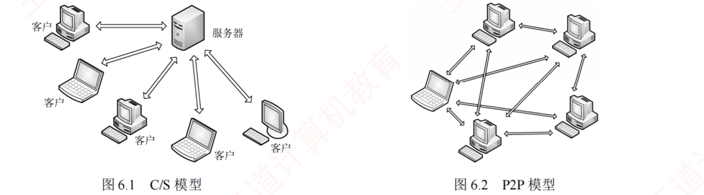
图 6.1 C/S 模型（左）· 图 6.2 P2P 模型（右） （原书 p.268，两图并排，必须对照看）——左图的图证：四台「客户」全部只与中心「服务器」连线，客户与客户之间一条线都没有 ，这就是「客户之间不能直接通信」的画法；右图六台机器互相连成网状，没有中心服务器 。2019 真题 B 项的判据，看左图三秒就够。
与 C/S 模型相比，P2P 模型的优点 ：① 减轻中心服务器的计算和带宽压力 ，消除对单一服务器的依赖；② 多个节点之间可直接通信 ，无须中心服务器中转；③ 可扩展性好 ——传统服务器只能响应有限数量的并发请求，而 P2P 网络的容量随节点数量的增加而自然增长 ；④ 网络健壮性强 ，单个节点失效通常不影响其他节点。
缺点 ：节点在获取服务的同时还需为其他节点提供服务，会占用较多系统资源（CPU、内存、磁盘 I/O），可能影响本机性能。
背景 · 考试不碰
书上提到「据某些互联网调研机构统计，在某些年份 P2P 应用曾占互联网流量的 50%～90% ，导致网络严重拥塞，因此各 ISP 通常对 P2P 应用持限制或反对态度」。
这一段是产业背景，408 从未考过这个百分比，也不会考 ISP 的态度 ——读一眼知道「P2P 很吃带宽」即可，数字不用记。
我的补讲 · 「P2P 本质上仍基于 C/S」——这句话是 P2P 一节里唯一有考点价值的话
书上说 X ：从实现机制上看，P2P 模型本质上仍基于客户/服务器模式 。潜台词是 Y ：P2P 不是一种新的「通信机制」，只是一种新的「角色分配方式」。
两个 Peer 之间真正发生的那一次数据传输，仍然是「一方请求、一方响应」，仍然要走 TCP/UDP、仍然要有端口 ——
换句话说，P2P 是把 C/S 复制了 N 份，让每台机器同时扮演两个角色。 所以能考 Z ：凡出现「P2P 中不存在客户和服务器」这种绝对化说法，一律是错项 ——
正确说法是「没有固定的 角色划分」，那个「固定」二字不能丢。
陷阱 · P2P 网络是「逻辑网络 / 覆盖网络」，不是物理网络（习题 05）
习题 05 的错项 C：「P2P 网络是指与互联网并行建设的、由对等节点组成的物理网络 」。 正解：P2P 网络是一个构建在 IP 网络之上的覆盖网络（overlay） ，是一种动态的逻辑网络 。 怎么记 ：物理网络是「看得见摸得着」的（网线、交换机、双绞线）；逻辑网络是「协议约定出来的」 。
P2P 没有多铺一根网线，它跑的还是同一张互联网 ——所以它只能是逻辑的。
知识串联 · 「覆盖网络」这个词在 408 里出现过三次，指的是同一件事
覆盖网络 P2P 网络（ch6）· 虚拟专用网 VPN（ch4）· 虚拟局域网 VLAN（ch3） ——
这三个东西的共同点是：在既有的物理网络之上，用「协议约定」划出一个新的拓扑，物理线路一根没动 。怎么用 ⟹ 凡是名字里带「虚拟 / 逻辑 / 覆盖」的网络，判断题里出现「物理」二字必错。
这一条能同时秒杀 ch3 的 VLAN 题、ch4 的 VPN 题和本节的习题 05。
知识串联 · C/S 的「一个服务器进程同时服务多个客户」＝《操作系统》的并发
并发 书上说服务器「能够同时处理多个来自远程或本地客户程序的请求」 ——
这句话在《操作系统》里叫多进程 / 多线程并发 。6.3 的 FTP 会把它写得更明白 ：
FTP 服务器进程 =「一个主进程负责接收新请求 + 若干从属进程分别处理单个客户」，主进程与从属进程并发执行 ——
这正是 OS ch2 里「守护进程 + 工作进程池」的教科书写法。 为什么要这么设计 ⟹ 因为主进程如果自己去处理请求，就没人监听 21 端口了 ，
后面来的客户全部被拒。「接收」与「处理」必须分开，这是 OS 与网络共用的一条工程铁律。
我的补讲 · 2019 真题 D 项其实藏了一个「为什么 P2P 分发更快」的定量直觉
2019 真题 D 项（正确） ：「在向多用户分发一个文件时，P2P 模型通常比 C/S 模型所需的时间短 」。书上只说「分散负担」，但真正的原因值得多想一层 ：C/S 分发 N 份文件，服务器上行链路要发 N 倍的量，
总时间被服务器上行带宽 死死卡住，且随 N 线性增长 ；而 P2P 里每多一个下载者，就多了一个上传者 ——
系统的总上传能力随 N 一起增长，所以时间不再随 N 线性增长。 所以能考 ：「P2P 的容量随节点数增加而自然增长」这句话，与「分发时间更短」是同一件事的两种说法 ，
看到其中一个就等于看到另一个。
我的补讲 · 6.1 只有 4 页 1 道真题，但它是本章唯一能「30 分钟一劳永逸」的一节
本节全部考点可以压成一张四行小表 ，背完这张表，6.1 的 16 道题基本不会再错：
问什么 C/S P2P 谁知道谁的地址 客户必须知道服务器地址 ；服务器不必知道客户地址对等，都需要能找到对方 同类之间能否直接通信 客户之间不能直接通信 对等方之间可以直接通信 角色 地位不平等 ，角色固定 地位对等，没有固定角色 （但每次通信仍是 C/S） 可扩展性 不佳 （受服务器性能与带宽制约）好 （容量随节点数增长）
⟹ 本节唯一需要动脑的只有一句：「不能直接通信」的是客户与客户，不是客户与服务器。 📄 p.270
知识串联 · 「客户主动、服务器被动」这条规矩，在 408 里决定了三处答案
谁先开口 C/S 模型规定「客户主动发起、服务器被动等待」，这条规矩在后面三个地方直接变成答案 ：① 本章 6.3：FTP 控制连接一定是客户去连服务器的 21 端口 （习题 05「第一阶段建立的是控制连接」）； ② ch5：TCP 三次握手的第一个 SYN 一定由客户发出 ，服务器处于 LISTEN 状态； ③ ch4：DHCP Discover 一定由客户广播发出 ，服务器只负责应答。 唯一的例外 ⚠️ FTP 的 PORT（主动）模式是全书唯一一处「服务器主动去连客户」的场景 （用 20 端口连客户指定的随机端口）——
正因为它是例外，才被 2017 真题拿来做文章。记住这个唯一例外，就等于记住了「其余一律客户先开口」。
6.2 域名系统（DNS）
考点追踪 ▶ DNS 使用的传输层及以下协议（2018、2021）
域名系统（Domain Name System, DNS） 是互联网使用的命名系统 ，用于将便于人们记忆的主机名（如 www.cskaoyan.com）转换为便于机器处理的 IP 地址。DNS 采用客户/服务器模型，其协议运行在 UDP 之上，使用 53 号端口。 从概念上，DNS 可分为三部分：层次域名空间、域名服务器和解析器 。
必记 · 「UDP / 53」这一条是 2018 与 2021 两年真题的直接落点
DNS = 应用层协议 + 传输层用 UDP + 端口 53 + C/S 模型 + 分布式数据库。
这五个标签任何一个被换掉都是错项。 2018 真题 问「下列应用层协议中，可以使用传输层无连接 服务的是」——
FTP / SMTP / HTTP 全要可靠传输，只有 DNS 用 UDP，答案唯一。 课外补充（考试以书为准，但要知道） ：DNS 的区域传送（辅助服务器同步）用 TCP，报文超过 512 字节时也会退回 TCP ——
408 考纲只要求「UDP/53」这一条，选择题按书答；但若综合题让你解释「为什么 DNS 敢用 UDP」，要能说出下面这条理由。
我的补讲 · 「DNS 为什么敢用 UDP」——这个理由是综 01 的标准答案，也是最好的记忆钩子
书上说 X （综 01 解答）：DNS 不需要 TCP 的自动重传功能，因为「多次 DNS 请求都返回相同的结果，即做多次和做一次的效果一样」 。潜台词是 Y ：DNS 查询是幂等 的（idempotent）——重复执行不产生副作用。
既然重发一次毫无代价，那就不必花三次握手的钱去买 TCP 的可靠性，应用层自己起个定时器重发一次就够了 。 所以能考 Z ：这条理由能反过来解释 为什么 FTP / SMTP / HTTP 不能用 UDP ——
它们传的是文件、邮件、网页，重复执行会产生重复的副作用（文件写两遍、邮件发两封） ，不幂等，所以必须要 TCP。
「幂等就能用 UDP，不幂等就得用 TCP」——一句话记住整张端口表的 UDP/TCP 分栏。
6.2.1 层次域名空间
互联网采用层次树状结构 的命名方法。任何连接到互联网的主机或路由器 都拥有唯一的层次结构名称，即域名（Domain Name） 。域（Domain） 是名字空间中一个可被管理的划分 ；域可进一步划分为子域，从而形成顶级域、二级域、三级域 等层次结构。每个域名由一系列标号组成，各标号之间用点（"."）分隔。
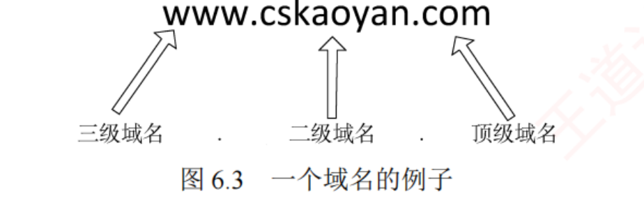
图 6.3 一个域名的例子 （原书 p.270）——三个空心箭头的方向就是考点：从右往左，级别从高到低 。com 是顶级域名、cskaoyan 是二级域名、www 是三级域名。「级别最低的写在最左边，级别最高的写在最右边」这句话，看这张图比背它快。
关于标号的四条规定 ：① 标号中的英文字母不区分大小写 ；② 标号中除连字符（-） 外不得使用其他标点符号；③ 每个标号不超过 63 个字符，整个域名（含分隔点）总长度不超过 255 个字符 ；④ 级别最低的域名写在最左边，级别最高的顶级域名写在最右边 。
顶级域名（TLD）三大类 ：① 国家顶级域名（ccTLD） ，如 .cn（中国）、.us（美国）；② 通用顶级域名（gTLD） ，如 .com（公司）、.net（网络服务机构）、.org（非营利组织）、.edu（教育机构）、.gov（政府机构）；③ 基础结构域名（arpa） ，用于反向域名解析 （把 IP 地址转换为对应的域名）。
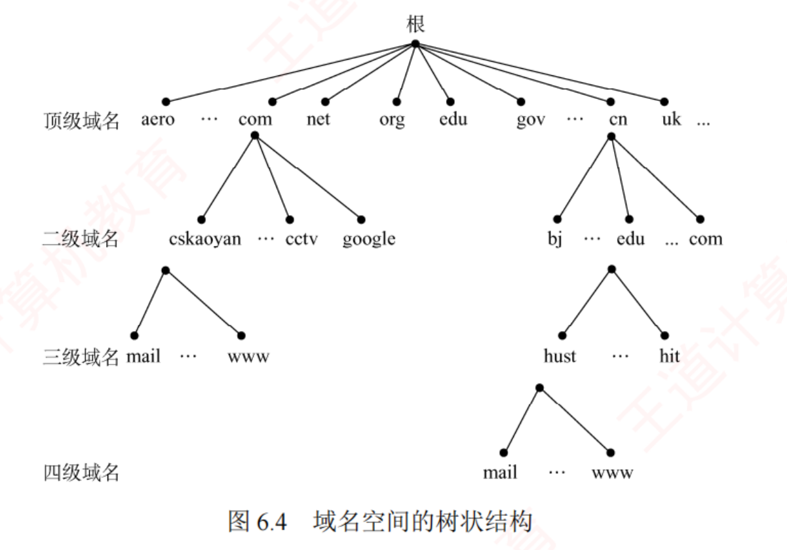
图 6.4 域名空间的树状结构 （原书 p.271）——本节的骨架图 。根 → 顶级域名（aero/com/net/org/edu/gov/cn/uk）→ 二级域名 → 三级域名 → 四级域名。看图能立刻回答两个高频问法 ：① 一个域名有几级 = 数标号个数（`www.hust.edu.cn` 是四级）；② 「谁管谁」= 树上的父子关系，各级域名由其上一级 的域名管理机构管理。
在域名系统中，各级域名由其上一级的域名管理机构管理 ；顶级域名由互联网名称与数字地址分配机构（ICANN）管理 。国家顶级域名下的二级域名由相应国家自行规定和管理。例如，负责管理 cn 域的中国将 edu.cn 子域授权给中国教育和科研计算机网（CERNET） 管理。
我的补讲 · 「标号个数」是 2016 真题的胜负手，图 6.4 就是它的答题工具
书上说 X ：域名由一系列标号组成，各级域名由上一级管理机构管理。潜台词是 Y ：树上每下一级，就可能 多一台要问的域名服务器。
所以「本地域名服务器最多要查几次」这个问题，答案不是死数字，而是「数域名里有几个标号」 。 所以能考 Z（2016 真题原题） ：www.abc.xyz.com 有 4 个标号 （com / xyz / abc / www），
除最左的主机名 www 外，每一级都可能自成一区 ，加上必问的根 ⟹
根 + com + xyz.com + abc.xyz.com = 最多 4 次 。公式化：最多查询次数 = 标号个数 n （含根、不含最左主机名那一次单独计入）；最少 = 0（缓存命中）。
陷阱 · 「域名与什么一一对应？」—— 答案是「什么都不对应」（习题 01）
习题 01 的四个选项 A 的 IP 地址 / B 的 MAC 地址 / C 的主机，全错 ，答案是 D「以上都不是」。 三个反例，一个都不能少 ：一台主机可以有多个 IP （双网卡服务器）⟹ 两个 IP 映射到同一个域名；多台主机可以映射到同一个域名 （负载均衡）；一台主机可以映射到多个域名 （虚拟主机）。域名与 IP 之间是多对多 ，不是一一对应。
习题 02 的错项 A「Internet 上提供客户访问的主机一定要有域名 」也倒在这条线上——一定要有的是 IP，域名可有可无 。
我的补讲 · 顶级域名三大类里，只有 arpa 那一类需要动脑
书上说 X ：顶级域名分 ccTLD（国家）、gTLD（通用）、arpa（基础结构域名，用于反向域名解析 ） 三类。潜台词是 Y ：前两类是「名字 → 地址」，第三类是「地址 → 名字」，方向反了。
正向解析（www.abc.com → IP）是每天都在用的；反向解析（IP → 域名）用在日志审计、垃圾邮件过滤等场合。 所以能考 Z ：选择题若问「DNS 提供什么服务」，标准答案是「从域名到 IP 或 从 IP 到域名的映射」——两个方向都要写
（习题 04 的解析原话）。只答一个方向，在简答题里要扣分。
背景 · 考试不碰
书上列的通用顶级域名 .com（公司）/.net（网络服务机构）/.org（非营利组织）/.edu（教育机构）/.gov（政府机构） ，
以及「ICANN 管顶级域、CERNET 管 edu.cn」这类管理归属 的细节——408 从未考过某个具体后缀归谁管，也没考过 ICANN 的全称 。
这一段读一遍知道「有分级授权这回事」即可 ，真正要记的只有「各级域名由其上一级管理机构管理 」这一句话本身，因为它对应着「区 ⊆ 域」和迭代查询的层级。
6.2.2 域名服务器（四类）
域名到 IP 地址的解析由运行在域名服务器 上的程序完成。一个服务器负责管辖（或具有管理权限）的范围称为区 ，其范围小于或等于域。 一个区内的所有节点必须连通，每个区都设有相应的权限域名服务器（授权域名服务器） ，保存该区中所有主机的域名到 IP 地址的映射。
没有任何一台域名服务器包含互联网上所有主机的映射 ，这些映射分布在所有域名服务器上。共有四种类型 的域名服务器：
类型 管什么 返回什么 考点 根域名服务器 DNS 层次结构的最高层级 ，知道全部顶级域名服务器 的域名和 IP 通常不直接给最终 IP ，而是返回下一步该查的顶级域名服务器地址 全球共 13 个 （每个是冗余集群）顶级域名服务器 管理在其下注册的所有二级域名 （如 .com 管所有以 .com 结尾的域名） 可能是最终 IP，也可能是下一步该查的服务器 IP 「可能是最终结果」这半句常被漏读 权限域名服务器 管理特定区 的域名信息，每台主机必须在所属区的权限服务器处登记 一定能把其管辖的主机名解析为 IP 习题 09 问「谁可以将其管辖的主机名转换为 IP」＝它 本地域名服务器 ISP / 大学 / 院系各自部署；主机的 DNS 请求首先被发给它 把最终结果返回给主机 Windows 里配「本地连接」填的那个 DNS 地址就是它
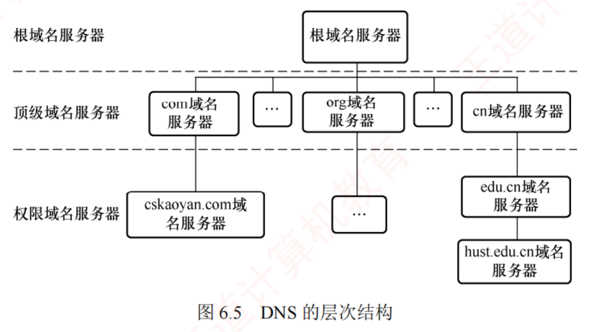
图 6.5 DNS 的层次结构 （原书 p.272）——这张图最重要的信息是「谁不在 图里」：本地域名服务器不在这张树上 。它游离于层次结构之外，是「主机的代理人」，既不是根、也不是顶级、也未必是权限 （虽然实际上许多本地域名服务器同时兼任权限域名服务器）。2020 真题的题图里，本地域名服务器画在局域网内、其余三台画在 Internet 云里，正是这张图的实物版。
必记 · 「区 ⊆ 域」，永远不会反过来
域（Domain）＝ 命名空间上的划分 （一棵子树）；区（Zone）＝ 实际有服务器管辖的范围 。一个域可以切成多个区 （把某些子域授权给别的机构去管），所以 区 ≤ 域 。
书上原话就是「其范围小于或等于域」——注意有「等于」，别记成严格小于。
我的补讲 · 「13 个根域名服务器」这个数字，别被它的通俗解释带偏
书上说 X ：全球共有 13 个 根域名服务器，每个实际上是由多个冗余服务器组成的集群 。潜台词是 Y ：「13」数的是域名标识 （a.root-servers.net … m.root-servers.net），不是 13 台机器。
真实部署的物理服务器有上千台，靠任播（anycast）分布在全球。 所以能考 Z ：选择题里出现「全世界只有 13 台根域名服务器」这种说法，严格讲是错的 ——
但 408 从未在这个点上设过坑，答题时直接填 13 即可 ，知道背后的真相只是防止被课外资料绕晕。
真正会考的是「根服务器通常不直接给最终 IP 」这半句。
知识串联 · DNS 的层次结构 ＝《数据结构》的树 + 《操作系统》的多级目录
树 域名空间是一棵有根树 （ds ch5）：根是空标号，顶级域是根的孩子，一个域名就是一条从叶到根 的路径 ——
而且路径的书写顺序是「从叶到根」（www.cskaoyan.com），与文件路径「从根到叶」（/usr/local/bin）方向正好相反 。分块与映射 「没有任何一台服务器保存全部映射，映射分布在所有服务器上」 ——
这就是 408 跨科枢纽「分块与映射 」的又一个实例 ：Cache 组相联把主存切块、页表把地址空间切页、索引文件把文件切块、DNS 把命名空间切区 ，
四者的共同套路是「大表放不下，就切成小表 + 一层索引指路」。 多级目录 OS ch4 的多级目录也是「上一级管下一级、逐级下降查找」 ——
DNS 的迭代查询与「按路径名逐级查目录项」是同一种走法，连「缓存最近查过的结果」这一招都一样（OS 里叫目录项高速缓存） 。
我的补讲 · 「本地域名服务器扮演关键角色」——关键在哪，书上没说透
书上说 X ：本地域名服务器在域名系统中扮演关键角色 ；主机的 DNS 请求首先被发送给它。潜台词是 Y ：本地域名服务器是主机的「全权代理人 」——主机把整件事外包给它，自己什么都不用管。
这就是为什么主机只需要知道本地域名服务器的 IP，不需要知道根服务器的 IP （习题 05 的答案 C）。 所以能考 Z ：三个高频问法都落在这条「代理」性质上 ——
① 主机首先查询谁？（习题 08：先查本地域名服务器 202.120.66.68，不管后面用什么方式）；
② 主机需要知道哪些 IP？（习题 05：只需本地服务器的）；
③ 递归查询里由谁把结果返回给客户端？（习题 06：最开始连接的那台服务器 ，也就是本地服务器）。 ⟹ 一句话：无论后面多复杂，主机眼里只有一台服务器。
知识串联 · 「本地域名服务器」＝ 一层间接 ，与 OS 的系统调用、组原的间接寻址同构
加一层间接 计算机领域有句老话：「任何问题都可以通过增加一个间接层来解决」 ——
本地域名服务器就是主机与整个 DNS 体系之间的那一层间接。 同构的例子：① 组原的间接寻址 （操作数地址不直接给，先取一次地址再取数）；
② OS 的系统调用 （用户程序不直接碰硬件，先陷入内核）；③ ch4 的默认网关 （主机不需要知道全网路由，只需知道网关）。 代价 ⚠️ 每一层间接都要付出一次额外的访问代价 ——
所以这四处也都配了缓存：间接寻址配 Cache · 系统调用配快表 · 默认网关配 ARP 缓存 · 本地域名服务器配 DNS 缓存 。
「加一层间接 + 给这层加缓存」是同一个套路的两半。
6.2.3 域名解析过程：递归查询与迭代查询
考点追踪 ▶ DNS 协议的功能与意义（2021）· DNS 递归查询机制（2010）· DNS 迭代查询机制（2016、2020）
域名解析是把域名转换为 IP 地址的过程。客户端通过本机的 DNS 客户端 构造 DNS 请求报文，以 UDP 数据报 的形式发送给本地域名服务器 。解析有两种方式：递归查询 和迭代查询 。
（1）主机向本地域名服务器的查询都 采用递归查询。 在递归查询中，若本地域名服务器不知道被查询域名的 IP，则它会以 DNS 客户的身份，代替主机 向其他服务器继续查询，而不是让主机自行后续查询。无论后续采用何种查询方式，主机向本地域名服务器的查询都采用递归查询。
（2）本地域名服务器向其他域名服务器可采用递归查询或迭代查询。
递归查询 ［图 6.6(a)］：本地域名服务器只需向根域名服务器发起一次查询 ，后续由各级服务器之间递归完成［步骤③～⑥］，最终根域名服务器把 IP 返回给本地域名服务器（⑦），再由本地域名服务器返回给主机（⑧）。这种方式会给根域名服务器带来过重负载，实际中几乎不被采用。 迭代查询 ［图 6.6(b)］：根域名服务器收到查询后，要么直接给出所查 IP，要么告诉本地域名服务器「你下一步应向哪个服务器查询」 ；随后由本地域名服务器自己去问下一站。如此逐级查询，直到获得目标 IP，最后由本地域名服务器把结果返回给主机 。
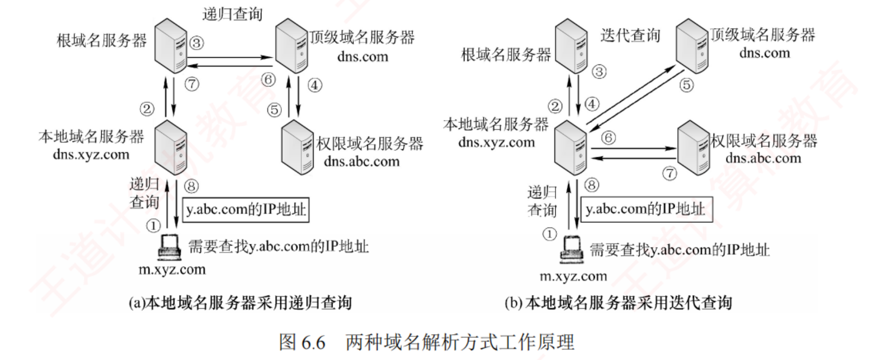
图 6.6 两种域名解析方式工作原理 （原书 p.273）——这张图讲不清就必须翻书，所以必裁 。看箭头的起点就够了 ：(a) 递归——②③④ 一路向上向右深入 ，⑤⑥⑦ 原路逐级回传 ，本地服务器只出手了一次；(b) 迭代——②④⑥ 三个箭头全部从本地域名服务器出发 ，③⑤⑦ 三个箭头全部回到它，它一个人跑了三趟 。
必记 · 递归 vs 迭代，一句话分清：问的是「谁在跑腿」
递归 = 被问的服务器替你把剩下的路走完 （报文层层深入、原路返回，本地服务器只发 1 条 ）；迭代 = 被问的服务器只告诉你下一站在哪 （每一次查询都由本地服务器发起，本地服务器发多条 ）。而「主机 → 本地域名服务器」这一段永远是递归 ，与后面用什么无关 ——这就是书上那句「无论后续采用何种查询方式」。
我的补讲 · 习题 10 与 2010 真题是一对「同题干、只换一个词」的镜像题，必须并排背
两题的题干几乎逐字相同 ，只有本地域名服务器
对外 用哪种查询方式不同，答案就分道扬镳：
题 主机→本地服务器 本地服务器→其他服务器 主机发几条 本地服务器发几条 答案 习题 10 递归 迭代 1 条 多条 （根 + 顶级 + 权限）B 2010 真题（11） 递归 递归 1 条 1 条 （只问根，后面别人代跑）A
书上说 X ：递归查询时本地服务器只需向根发一次。
潜台词是 Y ：
「发几条」这个问法，问的其实是「谁承担了后续查询的工作量」 ——
递归把工作量甩给了根（所以根扛不住，实际不用）；迭代把工作量留给了本地（所以实际都用迭代）。
所以能考 Z ：
看到「递归」就填 1 条，看到「迭代」就填多条 ；
而「主机那一栏」永远是 1 条 ，无论如何都不变——这是四个选项里 C、D 两项（「多条, …」）永远错的原因。 📄 p.273
域名解析的完整举例（8 个 UDP 报文）
假设某客户希望获取主机 y.abc.com 的 IP 地址，整个解析过程最多涉及 8 个 UDP 报文：4 个查询报文和 4 个回答报文 ：
① 客户 ──递归查询──▶ 本地域名服务器 dns.xyz.com
② 本地服务器 先查本地缓存；未命中 ──迭代查询──▶ 根域名服务器
③ 根服务器 ──回答──▶ 「.com 顶级域名服务器 dns.com 的 IP」
④ 本地服务器 ──迭代查询──▶ 顶级域名服务器 dns.com
⑤ dns.com ──回答──▶ 「abc.com 区的权限服务器 dns.abc.com 的 IP」
⑥ 本地服务器 ──迭代查询──▶ 权限域名服务器 dns.abc.com
⑦ dns.abc.com ──回答──▶ 「y.abc.com 的 IP 地址」
⑧ 本地服务器 存入本地缓存 ──▶ 返回给客户
↑ 4 查（①②④⑥）+ 4 答（③⑤⑦⑧）= 8 个 UDP 报文
陷阱 · 「最多 8 个」的「最多」两个字，是一条送分线也是一条送命线
只要主机缓存或本地服务器缓存命中，报文数就少于 8。 三种情况的报文数 ：① 主机本地缓存命中 ⟹ 0 个 UDP 报文 （连本地服务器都不问）；
② 本地服务器缓存命中 ⟹ 2 个 （只有 ①⑧）；③ 全新的完整迭代解析 ⟹ 8 个 。 推广到 n 个标号 ：报文总数 = 2n + 2 （n 次对外查询各 1 查 1 答，再加主机与本地服务器之间的 1 查 1 答）。
y.abc.com 有 3 个标号（com / abc / y）⟹ 本地服务器要问根、com、abc.com 共 3 次 ⟹ 2×3+2 = 8。✅ 与书上吻合。
我的补讲 · 八个报文的编号，有一条极好记的规律：奇数问、偶数答（错开一位）
把八步重排一下就看出结构了 ：
报文 ① ② ③ ④ ⑤ ⑥ ⑦ ⑧ 方向 查 查 答 查 答 查 答 答 谁发 客户 本地 根 本地 com 本地 权限 本地
⟹ 中间六个报文（②～⑦）严格「一查一答」交替，而且每一个「查」都由本地服务器发出 ——这正是迭代的定义。
首尾两个（①和⑧）是主机与本地服务器之间那一对 ，
它们无论如何都存在（除非主机自己缓存命中）。
⟹ 记法：「1 对固定 + n 对迭代」= 2 + 2n 个报文 。n=3 时得 8。
这个式子比死记「8 个」有用得多，因为真题里的域名层数会变。 DNS 高速缓存
为提高查询效率并减少互联网上的查询流量，域名服务器广泛使用 DNS 高速缓存 。由于主机名与 IP 地址的映射关系并非永久有效 ，缓存记录会设置生存时间（TTL） ，到期后自动失效并清除。此外，主机端也常维护本地 DNS 缓存 ，只有当本地缓存未命中时，才会向 DNS 服务器发起查询 。
知识串联 · DNS 缓存 ＝ 408 跨科枢纽「空间换时间」的第五个实例
空间换时间 组原的 Cache 与 TLB（快表）· OS 的页表快表与目录项缓存 · ch4 的 ARP 高速缓存 · 本节的 DNS 高速缓存 ——
四者是同一条工程铁律的四次复读 ：把「查一次很贵」的结果存下来，下次直接命中。 三个共同的设计点 ⚠️ 它们连「设计上的三个坑」都一模一样 ：要有淘汰机制 （Cache 用 LRU、ARP 与 DNS 用 TTL 超时 ）；会有一致性问题 （后端变了、缓存还是旧的 ⟹ Cache 的写策略、DNS 的 TTL 到期）；命中与否决定题目答案的上下界 ——这一点在考试里最贵 ：
组原问「Cache 命中时/不命中时的访存时间」，本章问「最少 0 次 / 最多 4 次查询」，问法完全同构 。 所以 ⟹ 凡是题目问「最少」，先想缓存命中；问「最多」，先想全部落空。
2016 真题的 C（0, 4）与 D（1, 4）之争，全在这一句上。
📄 p.275
我的补讲 · 6.2 全节 30 道题，其实只在问五件事
# 问什么 标准答案 被考过 1 DNS 在传输层用什么、端口多少 UDP / 53 （理由：请求幂等）2018 真题 · 习 12 2 递归还是迭代 ⟹ 发几条 递归 1 条 · 迭代多条 ；主机那一段永远递归、永远 1 条 2010 真题 · 习 10 · 习 07 3 最少 / 最多查几次 最少 0（缓存）· 最多 = 标号数 2016 真题 4 域名与什么一一对应 都不对应 （多对多）习 01 · 习 02 5 谁能把管辖的主机名转成 IP 权限域名服务器 习 09
⟹ 五条全部能脱口而出，6.2 的 30 道题就只剩 2020 那一道要动笔了。 6.2.4 本节真题拆解（2010 · 2016 · 2018 · 2020）
我的补讲 · 四道真题的「刀口」各不相同，一张表对齐
年份 问什么 刀口在哪 答案 2010 递归解析时主机与本地服务器各发几条请求 递归 ⟹ 本地服务器只问根 1 条 A（1 条, 1 条） 2016 迭代解析 www.abc.xyz.com，本地服务器最少与最多 查几次 最少想缓存（0）· 最多数标号（4） C（0, 4） 2018 哪个应用层协议可用传输层无连接 服务 只有 DNS 用 UDP B（DNS） 2020 从单击超链接到收到页面的最短与最长时间 DNS 迭代 + TCP 三次握手缝在一起 D（20ms, 50ms）
⟹ 前三道是「记住就对」，只有 2020 那道要动笔——它也是全节最贵的一道，下面单独拆。 ⭐ 2020 统考真题：DNS 迭代查询 × TCP 三次握手（全节最贵的一道）
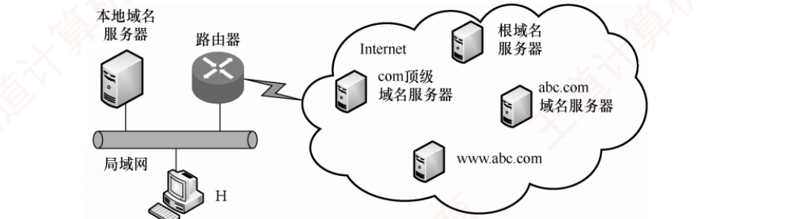
2020 真题题图 （原书 p.275）——左侧局域网上挂着本地域名服务器 与主机 H，经路由器连到右侧 Internet；云内有根域名服务器 / com 顶级域名服务器 / abc.com 域名服务器 / www.abc.com 四台。看图先数清一件事：云里有 3 台域名服务器 + 1 台 Web 服务器 ，www.abc.com 是 Web 服务器，不是域名服务器 ——迭代次数只算前 3 台。
题干 ：本地域名服务器只提供递归查询服务 ，其他域名服务器都只提供迭代查询服务 ；局域网内主机或本地域名服务器访问 Internet 上各服务器的往返时间 RTT 均为 10ms ，忽略其他各种时延 。主机 H 通过超链接 http://www.abc.com/index.html 请求浏览纯文本 Web 页 index.html，则从单击超链接开始到浏览器接收到 index.html 页面为止，所需的最短时间与最长时间 分别是（ ）。D. 20ms, 50ms
💭 思路（动手前看）
先把「一次网页访问」拆成两段独立计时的动作 ：第一段是「拿到 IP」（DNS），第二段是「拿到页面」（TCP + HTTP） 。
题目问最短与最长，差别只会出现在第一段 ——因为第二段无论如何都要走完。第二段先算死，它是常数 ：TCP 三次握手 1.5RTT，第三次握手可捎带 HTTP 请求 ，服务器返回页面再 0.5RTT ⟹ 恰好 2RTT 。
「2RTT 取页」这个数字要背死，本章后面还会再用两次。 再算第一段的两个极端 ：最短 = H 本地有 DNS 缓存 ⟹ 0 次查询、0 RTT ；
最长 = 缓存全落空 ⟹ 本地服务器迭代问根 / com / abc.com 三次 ⟹ 3RTT 。题干里「忽略其他各种时延」这句要专门读一遍 ：H 与本地域名服务器都在同一个局域网内，它们之间的时延被忽略了 ——
所以「H 问本地服务器」这一步不加 RTT 。这是本题最大的陷阱，加了就得 60ms，四个选项里都没有，反而会让人怀疑自己算错。 ✍️ 考场卷面（选择题不写过程，这里给的是「草稿纸上该画什么」）
最短（H 有 DNS 缓存）：
H ──SYN────────────▶ www.abc.com ┐
H ◀──────SYN+ACK──── www.abc.com ├ 1.5 RTT（三次握手）
H ──ACK + GET index.html──▶ ┘ ← 第三次握手捎带 HTTP 请求
H ◀──── index.html ────── ← 0.5 RTT
= 2 RTT = 20 ms
最长（缓存全落空）：
H ──递归──▶ 本地DNS（时延忽略，不计 RTT）
本地DNS ──迭代──▶ 根 回答 com 服务器地址 ┐
本地DNS ──迭代──▶ com 回答 abc.com 地址 ├ 3 RTT = 30 ms
本地DNS ──迭代──▶ abc.com 回答 www.abc.com 的IP ┘
再走上面那 2 RTT 取页 = 20 ms
合计 5 RTT = 50 ms
⟹ 最短 20ms、最长 50ms，选 D 。 📌 批注（对照完校对）
扣分点 1 「最短」不是「1 次 DNS」，是「0 次 DNS」。选 B（10ms, 50ms）的人就是把最短算成了「只做 1 次 DNS 查询 = 1RTT」，忘了缓存能让 DNS 一次都不做。 扣分点 2 迭代 3 次不是 4 次。www.abc.com 是 Web 服务器，不是「www 这一级的域名服务器」 ——
abc.com 的权限服务器直接就能给出 www.abc.com 的 IP，不需要再往下问一级。
对照 2016 真题的 www.abc.xyz.com 要查 4 次 ：那题的 abc.xyz.com 是一个区 、有自己的权限服务器，这题的 abc.com 就是最后一级。
⟹ 迭代次数看的是「域名被切成了几个区」，不是「域名有几个点」——两道真题合起来才把这条说透。 扣分点 3 局域网内的那一跳时延，题目说忽略就是忽略。凡题干出现「忽略其他各种时延」「H 与本地域名服务器间时延不计」，就不许再自己加一个 RTT 。 提速心算 ：本题的骨架就一句话——「DNS 迭代 n 次 + 取页 2RTT 」 ，
最短取 n=0、最长取 n=区数。这个骨架在 6.5 的习题 13（答案 7RTT）里会原样再用一次，只是那题还多了流水线请求图片的 1RTT。
知识串联 · 「2RTT 取页」里的 1.5 与 0.5 是从 ch5 借来的
三次握手 ch5 的三次握手是 SYN → SYN+ACK → ACK 三个报文，跨越 1.5 个 RTT
（第三个报文是单程，只算半个 RTT）。而 HTTP 请求可以捎带 在第三次握手的 ACK 里 ，
⟹ 服务器收到第三个报文时就已经看到了 GET，立刻回页面，再走 0.5RTT 回来 ⟹ 1.5 + 0.5 = 2RTT。 捎带 「捎带（piggyback）」这个词在 ch3（捎带确认）与 ch5（ACK 捎带数据）都出现过 ——
本章把它用在了「第三次握手捎带 HTTP 请求」上，正是它把 2.5RTT 压成了 2RTT 。
⚠️ 但要注意：并不是每道题都允许捎带 ——
6.3 的 2023 真题里，建连算的是整整 1 个 RTT 而不是 1.5，因为那题的起止点定义不同 （见 6.3 末尾的拆解）。
📄 p.277
我的补讲 · 2020 真题还藏着一个「本章与 6.5 的接口」，别只做完就走
2020 那道题算出的「最长 5RTT」，其实是一个可以继续加长 的骨架 ：
题干条件 DNS 建连+取页 取引用对象 合计 2020 真题 ：纯文本页、有缓存0 2RTT 0 2RTT 2020 真题 ：纯文本页、无缓存3RTT 2RTT 0 5RTT 6.5 习题 13 ：7 图、流水线、无缓存4RTT 2RTT 1RTT 7RTT
⟹ 三行是同一个骨架的三次填空：「DNS 若干 RTT + 建连取页 2RTT + 取对象若干 RTT」 。
题干里「纯文本 Web 页」五个字就是在告诉你：第三栏是 0，没有引用对象要取 。
如果题目改成「该页引用了 3 幅图」，第三栏就要按 6.5 的账本填。这是 6.2 与 6.5 之间唯一的接口，两节一起复习最省事。 知识串联 · DNS 的「幂等」与 ch5 的「重传」是一枚硬币的两面
可靠性谁来做 ch5 花了 29 页讲 TCP 怎么做可靠传输（序号、确认、超时重传、冗余 ACK） ；
而 DNS 的做法是：什么都不做，超时就再问一遍 。 书上综 01 原话：「当一个进程做一次 DNS 请求时，它启动一个定时器 ；若定时器计满而未收到回复，则它就再请求一次 」——
这其实就是一个极简版的「超时重传」，只不过做在应用层 而不是传输层。 分层的真相 ⚠️ 这说明「可靠性」不是某一层的专利，而是可以放在任何一层 的功能 ——
放在传输层（TCP）就是通用方案，放在应用层（DNS 自己重发）就是定制方案。
ch1 讲「为什么某些功能会在多层重复出现」，这就是最好的实例。
6.3 文件传输协议（FTP）
6.3.1 FTP 的工作原理
考点追踪 ▶ FTP 在传输层使用的协议（2009、2018）
文件传输协议（FTP） 提供交互式访问 ，允许用户指定文件的类型与格式 ，并支持对文件设置存取权限 。它屏蔽了不同计算机系统的底层细节 ，因此适用于在异构网络 中的任意两台计算机之间可靠地传送文件。主要功能：① 支持不同类型主机系统 之间的文件传输；② 通过用户权限管理，提供对远程文件的管理能力；③ 通过匿名（anonymous）FTP 实现公用文件共享。
FTP 采用客户/服务器 工作模式，基于 TCP 提供可靠的传输服务 。服务器进程由两部分组成：一个主进程负责接收新请求；若干从属进程分别处理单个客户的请求。 工作步骤：① 打开熟知端口 21（控制端口） ；② 等待客户连接请求；③ 启动从属进程 处理该请求，处理完毕后从属进程终止；④ 主进程返回等待状态 。主进程与从属进程并发执行。
必记 · FTP 是有状态 协议——这条与 6.5 的「HTTP 无状态」构成本章最爱考的一组反差
FTP 服务器需在整个会话期间维护用户的状态信息 ：把用户账户与控制连接关联起来、跟踪用户在远程目录树中的当前位置
（你 cd 到哪个目录，服务器得记着）。而 HTTP 是无状态的：同一客户第二次请求同一页面，服务器的响应与第一次完全相同，它不记得你来过。 ⟹ 两条一起背：FTP 有状态（记得你在哪个目录）· HTTP 无状态（要靠 Cookie 才认得你） 。
我的补讲 · 「异构网络」与「匿名 FTP」两个词，各对应一个考点
书上说 X ：FTP 屏蔽了不同计算机系统的底层细节 ，因此适用于在异构网络 中的任意两台计算机之间可靠地传送文件；
并支持匿名（anonymous）FTP 。潜台词是 Y ：「异构」指的不是网络异构，而是主机系统异构 （硬件不同、操作系统不同、文件系统不同）。
FTP 之所以要区分 ASCII 方式与 Binary 方式，正是因为不同系统的换行符与字符编码不一样 ，文本文件必须转换、二进制文件必须原样搬。 所以能考 Z ：习题 07 的 A 项「FTP 可以实现异构网络中计算机之间的文件传送」是对的 ；
习题 09 的 A 项「FTP 可以在不同类型的操作系统之间 传送文件」也是对的 ——
两句话说的是同一件事，是 FTP 最常被拿来当「正确项」的一条性质。
6.3.2 控制连接与数据连接
考点追踪 ▶ FTP 控制连接和数据连接的特点（2017、2023）· FTP 控制连接的功能（2009）
FTP 在工作时使用两个并行的 TCP 连接 ：控制连接（服务器端口 21） 和数据连接（服务器端口 20） 。采用两个独立端口有助于协议的清晰实现。
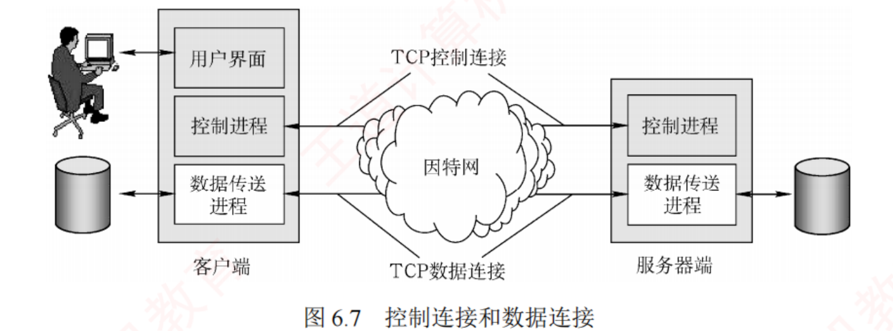
图 6.7 控制连接和数据连接 （原书 p.278）——FTP 双连接的唯一图证，必裁 。左「客户端」框内自上而下是用户界面 / 控制进程 / 数据传送进程 ，右「服务器端」框内是控制进程 / 数据传送进程 ；中间因特网上下各一条线：上＝TCP 控制连接（连两端的控制进程 ），下＝TCP 数据连接（连两端的数据传送进程 ） 。图上还有一个常被忽略的信息：客户端左侧连着本地磁盘 、服务器端右侧连着服务器磁盘 ——文件是磁盘到磁盘搬，控制连接一个字节的文件数据都不碰。
控制连接（服务器 21）
传什么 ：控制命令（登录、目录操作、传送命令等）存活多久 ：整个会话期间保持打开 （持久）先后顺序 ：最先建立、最后释放 不传文件数据 （但传输途中仍可用它发中断/暂停指令）
数据连接（服务器 20）
传什么 ：文件内容 （也包括 LIST 返回的目录列表）存活多久 ：一次传输一建一拆 （非持久）先后顺序 ：后建立、先释放 数据传送进程随之终止
我的补讲 · 「控制连接是包住数据连接的一层壳」——一句话吃掉习题 04 的四个选项
书上说 X ：控制连接在整个会话期间保持打开；数据传送完毕后数据连接关闭。潜台词是 Y ：两条连接的生命周期是嵌套 关系，不是并列关系。
画成时间轴就是：控制建 ──[ 数据建 ── 数据拆 ]── 控制拆，数据连接整个被包在控制连接里面。 所以能考 Z（习题 04） ：四个选项无非是「谁先建、谁先释」的四种排列，
正确的是 C：控制连接先于 数据连接建立，并晚于 数据连接释放。
把「嵌套」两个字记住，四选一变成零思考。 再补一层 ：一次 FTP 会话里数据连接可以建立很多次 （下载 10 个文件就建 10 次），而控制连接自始至终只有一条——
这是 2023 综合真题第 1 问「控制连接是持久的还是非持久的」的完整答案。
知识串联 · FTP 的两条连接 ＝ ch5 的两个不同四元组，这是「并行」二字的准确含义
四元组 书上说 FTP 使用「两个并行 的 TCP 连接」 ——
用 ch5 的语言说：这是两条完全独立的 TCP 连接，各有各的四元组、各有各的序号空间、各有各的窗口与拥塞控制 。 控制连接 = <客户 IP, 随机端口 a, 服务器 IP, 21 >；数据连接 = <客户 IP, 随机端口 b, 服务器 IP, 20 >（PORT 模式）。
两条连接的四元组至少在「服务器端口」这一维上不同，所以能共存。 2023 真题的落点 ⚠️ 正因为是两条独立的连接，2023 那道题里数据连接有自己独立的初始序号（100）和独立的拥塞窗口 ——
它不会继承控制连接的任何状态。 把两条连接当成一条，第 2 问的序号就会算错。
数据连接的两种模式：PORT（主动）与 PASV（被动）
模式 谁开端口 谁发起 TCP 连接 服务器数据端口 PORT（主动模式，默认） 客户端 随机选一个本地端口，用 PORT 命令告知服务器服务器 主动连客户端20 PASV（被动模式） 服务器 在本地随机开一个端口，经控制连接告知客户端客户端 主动连服务器随机 （不是 20）
两种模式的区别在于：是服务器主动连接客户端（主动模式）还是服务器被动响应客户端的连接（被动模式），由客户端决定 。 书上的【注意】明确：若无特别说明，可默认采用主动模式 （⟹ 数据连接服务器端口 = 20）。
陷阱 · 「20 / 21 都只属于服务器端」——这把刀在本节砍了三次
三道题，同一个错处 ：
题 错误说法 错在哪 习题 02 C 用于控制连接的 TCP 连接在客户端 使用的端口号为 20 20 与 21 都是服务器端 的熟知端口；都由系统自动分配 习题 09 D 客户端 默认使用端口 20 与服务器建立数据传输连接2017 真题 C 服务器与客户端的 TCP 20 端口 建立数据连接
⚠️ 2017 真题 C 的错处极其隐蔽：不是「20 端口」错，而是「客户端的 20 端口」错。
正确说法是「服务器用自己的 20 端口，去连客户进程自己提供的 那个随机端口」。
推广到全章 ：
当我们说 FTP 用 20/21、HTTP 用 80、SMTP 用 25 时，指的一律是服务器端端口 ——
这是表 6.2 那张端口表的正确读法，也是 6.6 疑难点第 1 条的全部内容。 陷阱 · LIST 命令的返回结果走 20 不走 21（习题 08，最容易错的一道）
题 ：用户发送 LIST 命令获取服务器的文件列表，服务器应通过哪个端口传输该列表？答案 20。 「LIST」长得像控制命令，所以第一反应是 21——错。 正确的分界线 ：命令本身（那几个字母）走 21；命令的返回内容 （文件内容 / 目录列表）走 20。
判据是「这是控制信息 还是数据 」，而目录列表是数据。
我的补讲 · 「带外传送」是 FTP 独有的标签，判据只有一条
书上说 X ：FTP 使用独立的控制连接传输命令，其控制信息属于带外（Out-of-band）传送 。潜台词是 Y ：「带内 / 带外」问的是控制信息与数据信息走不走同一条逻辑信道 。 带外 = 分两条信道（FTP：命令走 21、数据走 20）· 带内 = 同一条信道（HTTP：请求与响应都在同一条 TCP 连接上）。 所以能考 Z（习题 03） ：四个选项 HTTP / SMTP / FTP / POP 里，只有 FTP 用了两条连接，所以只有 FTP 是带外传送 。
记法：「带外」＝「另开一条线」，FTP 是本章唯一开两条线的协议。
背景 · 考试不碰
书上末尾提到：用 FTP 修改远程文件要「下载→改→传回」两次完整传输 ，效率较低；而网络文件系统（NFS） 允许进程直接打开远程文件并在指定位置读/写 ，只传大文件中的特定片段。
NFS 不在 408 考纲内，从未出过题 ——知道「NFS = 能只传一段，FTP = 只能整个搬」这一句对比即可，细节不用看。
另外习题 11 的「ASCII 方式 vs Binary 方式」，书上自己都标了「本题可能有所超纲，了解即可 」——记住文本用 ASCII、图像声音用 Binary 就够。
知识串联 · FTP 的「主进程 + 从属进程」＝《操作系统》的并发服务器模型
并发 「一个主进程负责接收新请求，若干从属进程分别处理单个请求，主进程与从属进程并发执行」 ——
这段话直接搬进 OS ch2 的进程管理也毫无违和 。主进程 = 只做 accept 的守护进程；从属进程 = 每来一个客户 fork 一个。 为什么必须分开 ⚠️ 如果主进程自己去传文件，那它就没法监听 21 端口了 ，后续客户全被拒——
这与 OS 里「不能让长任务霸占调度」是同一个道理。 状态维护的代价 「FTP 有状态、服务器要记住每个用户的当前目录」 意味着服务器要为每个连接保存一份上下文 ——
这正是 OS 里的 PCB / 线程控制块思想：并发的代价 = 每条流都得留一份状态。
而 HTTP 无状态的全部好处，就是省掉了这份状态，从而能轻松扛住海量并发 ——两节合起来是一组完整的权衡。
知识串联 · 「DHCP 必须用 UDP」这条理由跨到了 ch4（习题 12）
DHCP 习题 12 问「直接封装 FTP、DNS、DHCP 报文的协议分别是」，答案 TCP、UDP、UDP 。
前两个好记，第三个的理由 才是考点 ：DHCP 用 UDP 是被迫的 ——客户在拿到 IP 地址之前，根本没有 IP，也就无法建立 TCP 连接。
（ch4 讲 DHCP 时说过：DHCP Discover 是用 0.0.0.0 作源地址、255.255.255.255 作目的地址广播出去的。） 怎么用 ⟹ 把三条「为什么用 UDP」的理由并排背 ：
DNS 用 UDP 因为幂等 （重发无害）· DHCP 用 UDP 因为还没有 IP （建不了 TCP）· TFTP 用 UDP 因为要简单 （引导时代码量要小）。 三个理由各不相同，而它们恰好就是端口表里那三个 UDP 项。
📄 p.280
我的补讲 · PASV 模式为什么会存在？书上没说，但这个理由让两种模式再也不会记反
书上只给了两种模式的机械描述，没解释「为什么要有被动模式」。
真实原因：客户端往往躲在防火墙或 NAT 后面，服务器主动连它根本连不进去。
把两种模式按「谁发起 TCP 连接」重排一遍就再也不会记反 ：
PORT（主动） PASV（被动） 「主动/被动」形容的是谁 服务器 （服务器主动连客户）服务器 （服务器被动等客户连）命令由谁发 客户发 PORT 告知自己的端口 客户发 PASV 请服务器开端口 服务器数据端口 20 随机 客户在 NAT 后面能用吗 不能 （连不进来）能
⟹ 记法：「主动 / 被动」永远是在形容服务器 的姿态，不是客户的。
这也解释了 2017 真题解析里那句「FTP 服务器是否使用 TCP 20 端口建立数据连接与传输模式有关 」——
PASV 模式下服务器根本不用 20。所以「FTP 数据连接一定用 20」这种绝对说法是错的，书上默认 PORT 才写 20。 我的补讲 · 习题 10 那道「封装五步」是白送分，但它的顺序值得单独确认一遍
题 ：从 FTP 服务器下载文件时，服务器上对数据封装的 5 个转换步骤是？
答案：数据 → 数据段 → 数据报 → 数据帧 → 比特 （自上而下穿过五层）。
层 应用层 传输层 网络层 数据链路层 物理层 数据单元 数据 数据段 数据报 数据帧 比特
⚠️ 出题人的常用手法是把顺序倒过来 （选项 A 就是「比特→帧→数据报→段→数据」，那是接收方 的解封装顺序）。
题干说的是「服务器上 对数据进行封装」——服务器是发送方，所以自上而下。先圈出「发送还是接收」再选。 知识串联 · 「一个协议用两条连接」在 408 里还有第二个例子
控制与数据分离 FTP 把控制与数据分成两条 TCP 连接，这个思想在计算机系统里反复出现 ：① 组原的 总线 就分成地址总线 / 数据总线 / 控制总线 三组，控制信号与数据走不同的线； ② 组原的 DMA 里，CPU 通过控制线下达命令，数据则直接在内存与设备之间走数据通路，CPU 不碰数据 ——
这与「控制连接不传文件数据」是完全一样的分工； ③ OS 的 I/O 控制方式 里，通道 / 控制器接管数据搬运，CPU 只发命令并等中断。 共同好处 ⟹ 控制通路可以在数据传输进行中 继续工作 ——
这正是书上那句「在文件传输过程中，仍可通过控制连接发送中断 等指令」的价值所在，也是综 02 的标准答案。
我的补讲 · 「有状态」这件事在 FTP 里有个具体后果：断点续传与目录状态
书上说 X ：FTP 是有状态协议，服务器需在整个会话期间维护用户状态——把用户账户与控制连接关联，并跟踪用户在远程目录树中的当前位置 。潜台词是 Y ：「当前位置」这四个字意味着 FTP 的命令是相互依赖 的 ——
你先 cd /pub 再 get a.txt，第二条命令的含义完全取决于第一条。
这就是「面向会话」，而 HTTP 的每个请求都必须自带完整 URL、彼此毫无关系。 所以能考 Z ：综 03 那道「描述下载 ftp://ftp.abc.edu.cn/file 的交互过程」，
答案之所以是四步有先后的脚本 （连 21 → 登录 → 报随机端口 → 服务器用 20 连过来传），正是因为 FTP 有状态 ——
每一步都建立在前一步的结果之上，顺序不能打乱。
对照：HTTP 的请求可以任意顺序、任意并发地发出去（这正是流水线能成立的前提）。有状态 ⟹ 必须串行；无状态 ⟹ 可以并发。
6.3.3 ⭐⭐ 2023 统考真题拆解：本章按分值排第二的一道（≈13 分）
我的补讲 · 先说清这道题的身份：它同时是 ch5「2023 年真题缺口」的真身
ch5 传输层那一章，真题年份表上 2023 是唯一的空格。
而这道题就在这里——王道把它归进了本章 6.3，可它 4 个问里有 3 个考的是 TCP。
问 考的是哪一章 具体考点 1) ch6（本章） 控制连接持久 / 数据连接非持久 / 登录走控制连接 2) ch5 SYN 与 FIN 各消耗 1 个序号 3) ch5 慢开始阶段「每收到一个 ACK 就 +1」 4) ch5 逐轮 cwnd 演化 + 吞吐率单位换算
⟹ 复习启示：不要按章设防，要按考点设防 。
如果你在复习 ch5 时因为「2023 没考传输层」而放松，这 13 分就白送了。
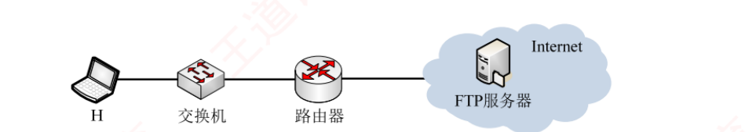
2023 统考真题题图 （原书 p.280）——主机 H — 交换机 — 路由器 — Internet（内含 FTP 服务器） 。⚠️ 这张拓扑图对解题几乎没有信息量 ：题目问的四件事全在文字里（初始序号 100 / MSS=1000B / 阈值 4MSS / RTT=10ms / 文件 18000B）。这正印证了综合题的一条规律：拓扑图只告诉你「谁跟谁通信」，真正的题眼在题干的数字上——别把时间花在读图，要花在圈数字。
题干 ：主机 H 登录 FTP 服务器后，向服务器上传一个大小为 18000B 的文件 F。H 为传输 F 建立数据连接时，选择的初始序号为 100 ，MSS = 1000B ，拥塞控制初始阈值为 4MSS ，RTT = 10ms ，忽略 TCP 段的传输时延；传输过程中 H 均以 MSS 段发送数据，未发生差错、丢包和失序 。第一个字节的序号 是多少？断开数据连接时，服务器发送的第二次挥手 ACK 段的确认序号 是多少？确认序号为 2101 的确认段时，拥塞窗口调整为多少？收到确认序号为 7101 时呢？请求建立数据连接开始 ，到确认 F 已被服务器全部接收为止，至少需要多长时间 ？期间应用层数据平均发送速率 是多少？
💭 思路（动手前看 · 卡壳时看）
第 1 问是纯记忆题，别在这浪费时间。 「持久 / 非持久」这组词在 6.5 讲 HTTP 时也用，但在 FTP 这里问的就是「控制连接活整个会话、数据连接一传一拆」 。
第三小问的钩子是「登录」两个字 ——登录属于身份验证，是控制信息 ，所以走控制连接。 第 2 问的信号是「初始序号 100」。 题干专门给了初始序号，就是要你用「SYN 消耗 1 个序号」 那条规矩 ：
初始序号是 SYN 段自己占掉的，数据只能从 101 开始。
后半问给的信号是「第二次挥手」——那就要再用一次「FIN 也消耗 1 个序号」。 第 3 问的信号是「收到确认序号为 X 的确认段时 」。
注意「时」字——问的是那一瞬间 的 cwnd，不是「那一轮结束后」的 cwnd。
这就逼你回忆慢开始的微观 规则：慢开始不是「每轮翻倍」，而是「每收到一个 ACK 就 +1」 ，翻倍只是它的宏观效果。 第 4 问先把文件换算成 MSS 个数 （18000B ÷ 1000B = 18 MSS ），再逐轮列出每轮最多能发几个 MSS ，累加到 ≥18 为止即得轮数；
最后补上建立连接的开销 。⚠️ 建连算 1 个 RTT 还是 1.5 个，取决于题干怎么定义起止点——这一问必须回读题干。 速率那一小问只是单位换算 ，但要小心「B」与「b」：题目问「数据平均发送速率」，答案给成 Mb/s 要乘 8。 ✍️ 考场卷面（照这个格式落笔）按 13 分估
1) 在 FTP 会话期间，控制连接一直保持，是持久 的 ；每次传输文件时才建立数据连接、传完即拆，数据连接是非持久 的 。⛳ 2 分 故 H 登录 FTP 服务器时建立的 TCP 连接是控制连接 。⛳ 1 分
2) 建立连接时，客户发送的第一次握手 SYN 段要消耗一个序号 ，初始序号为 100，
故文件 F 的第一个字节的序号为 101 。⛳ 2 分 FIN 段也要消耗一个序号 ，该 FIN 段序号为 18101，
故服务器第二次挥手 ACK 段的确认序号为 18102 。⛳ 2 分
3) 拥塞窗口逐轮变化如下（初始阈值 ssthresh = 4MSS）：
N 个传输轮次后 初始时 N=1 N=2 N=3 拥塞窗口 1MSS 2MSS 4MSS 5MSS
收到
确认序号 2101 时，服务器已收到 2000B（即 2 个报文段），此时仍处在
第 2 个传输轮次的慢开始阶段 ，
cwnd 未达阈值，
每收到一个确认 cwnd 加 1 ，
故此时 cwnd = 2 + 1 = 3MSS 。
⛳ 2 分
收到
确认序号 7101 时，服务器已收到 7 个报文段，即
第 3 轮传输结束 （1+2+4 = 7MSS），
故此时 cwnd = 5MSS 。
⛳ 2 分 4) 各轮最大数据传输量：
轮次 k k=1 k=2 k=3 k=4 k=5 该轮最大发送量 1MSS 2MSS 4MSS 5MSS 6MSS 累计 1 3 7 12 18 ✔
文件 F 大小 18000B =
18MSS ，
故发送完 F 需 5 个 RTT ；此外还需
1 个 RTT 用于建立 TCP 连接 。
⛳ 2 分
合计至少需要 6RTT = 6 × 10ms = 60ms 。
⛳ 1 分
应用层数据平均发送速率 = 18000B ÷ 60ms = 300 × 10³ B/s = 0.3MB/s =
2.4Mb/s 。
⛳ 1 分 ⟹ 至少需要 60ms ，应用层数据平均发送速率为 2.4Mb/s 。 📌 批注（对照完校对，这些字考场上不要写）
扣分点 1 SYN 与 FIN 各消耗 1 个序号，纯 ACK 不消耗。这条规矩在本题用了两次 ：100→101 用一次，18100→18101→18102 又用一次。
漏掉任何一次，第 2 问两小问全错。 扣分点 2 「收到确认序号 2101 时 」问的是那一瞬间，不是那一轮末。慢开始的微观规则是「每收到一个 ACK，cwnd 加 1」 ——第 2 轮发出 2 个段，收到第 1 个 ACK（确认序号 2101，即已收 2000B）时 cwnd 从 2 变 3，
收到第 2 个 ACK 时才变 4。答 4MSS 就是把「轮末值」当成了「瞬时值」。 扣分点 3 建连这里只算 1 个 RTT ，不是 1.5 个。理由在题干的起止点上：起点是「H 请求 建立数据连接」（发出 SYN 那一刻），
终点是「确认 F 已被服务器全部接收 」（收到最后一轮的 ACK 那一刻）。
第三次握手可以捎带第一轮数据，所以「握手」只额外占 1 个 RTT；最后一轮数据的 ACK 回来正好收尾。 ⚠️⚠️ 与 6.2 的 2020 真题必须对照记 ：那题记 2RTT 取页 （1.5 握手 + 0.5 取页），这题记 1RTT 建连 ——
两题的 RTT 记法不同，不是书上前后矛盾，而是起止点定义不同。
⟹ 凡遇 RTT 计数题，第一件事是圈出题干里的「从……开始，到……为止」，别背结论。 提速心算 ：逐轮表只需列到累计 ≥ 文件大小为止 ，本题 1+2+4+5+6 = 18 正好卡满第 5 轮。
若文件是 19MSS，第 5 轮发不完，就要第 6 轮 ⟹ 7RTT。这是最容易被改动的一个数，务必自己再推一遍。 单位换算 ：18000B ÷ 0.06s = 300 000 B/s；× 8 = 2 400 000 b/s = 2.4Mb/s 。
题目问「速率」而选项/答案给 Mb/s 时，忘乘 8 会得到 0.3——这个数字看起来也很「像答案」，最阴。
我的补讲 · 本节 28 道题里，只有 5 个知识点真的会丢分
6.3 全节 7 页 18 道原书题，但考点高度重复。压成 5 条：
# 分界线 被考过几次 1 20 / 21 都是服务器端口，客户端端口一律随机 3 次 （习 02 · 习 09 · 2017 真题）2 控制连接持久且「先建后释」，数据连接非持久 3 次 （习 04 · 2017 真题 · 2023 综合）3 命令走 21，命令的返回数据（含目录列表）走 20 1 次（习 08，但极易错） 4 带外传送 = FTP；带内传送 = HTTP 1 次（习 03） 5 FTP 用 TCP（因为不幂等） 2 次 （2009 真题 · 2018 真题）
⟹ 本节的复习性价比极高：5 条分界线 + 1 道大题，7 页书两小时可以彻底做完。 📄 p.283
我的补讲 · 2023 那道题里还有一个「反直觉」的点，值得单独想一遍
第 4 问算出 18MSS 要 5 个传输轮次（1+2+4+5+6 = 18），可细看会发现第 4 轮只发了 5MSS 而不是 8MSS。 原因：初始阈值 ssthresh = 4MSS，第 2 轮末 cwnd 涨到 4 就触顶了 ——
从第 3 轮开始进入拥塞避免 ，每轮只 +1 ：4 → 5 → 6。 ⟹ 逐轮序列 1, 2, 4, 5, 6 里，前三个是慢开始的翻倍（1→2→4），后两个是拥塞避免的线性（4→5→6）。
拐点就在 ssthresh = 4 那一格。 对照 2022 真题（6.5）：那题没给 ssthresh ，所以整段都是慢开始的 1→2→4，从不封顶。
「题目给没给阈值」决定了序列的形状，这是两道题最本质的差别。
6.4 电子邮件（失分密度全章第一 · 0.71 真题/页）
6.4.1 电子邮件系统的组成结构
电子邮件是一种异步通信方式，不要求通信双方同时在线 。发送端把邮件送至收件人所用的邮件服务器并存入其邮箱，收件人可随时登录读取。完整的电子邮件系统包含三个主要组成部分 ：用户代理（UA）、邮件服务器 ，以及电子邮件所依赖的协议 （SMTP、POP3 或 IMAP 等）。
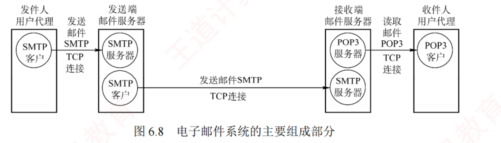
图 6.8 电子邮件系统的主要组成部分 （原书 p.283）——本节最贵的一张图，2012 真题就是它的原题 。一张图看清三段两协议 ：① 发件人用户代理（SMTP 客户）→ 发送端邮件服务器（SMTP 服务器）＝ SMTP ；② 发送端邮件服务器（SMTP 客户）→ 接收端邮件服务器（SMTP 服务器）＝ SMTP ；③ 接收端邮件服务器（POP3 服务器）→ 收件人用户代理（POP3 客户）＝ POP3 。 ⭐ 注意中间那个方框：发送端邮件服务器里同时画着「SMTP 服务器」和「SMTP 客户」两个圈 ——这就是「邮件服务器具有双重角色」的图证。
必记 · 三个字吃掉半节：推、推、拉
SMTP 采用推（Push） 的方式 ：用户代理或发送端邮件服务器主动把邮件推送 到目标服务器；POP3 采用拉（Pull） 的方式 ：用户代理读取邮件时主动向服务器发起请求，拉取 邮箱中的邮件。⟹ 三段两协议 = 前两段推（SMTP、SMTP），最后一段拉（POP3）。「推推拉」三个字，2012 真题秒答。
我的补讲 · 「邮件服务器有双重角色」这句话，是本节最深的一层
书上说 X ：邮件服务器采用 C/S 模式工作，但需具备双重角色：既能作为服务器接收邮件，又能作为客户发送邮件 。潜台词是 Y ：同一台机器在不同的连接上 扮演不同角色，「客户 / 服务器」是对某一条连接而言 的标签，不是机器的属性。
发送端邮件服务器：对着用户代理它是 SMTP 服务器 （被连），对着接收端服务器它是 SMTP 客户 （主动连）。 所以能考 Z ：凡出现「某台服务器只能是服务器 / 邮件服务器之间不需要 SMTP」这类说法，一律错。
2025 真题的 Ⅲ「POP3 支持邮件服务器之间发送与接收邮件」错，正是因为服务器之间那一段是 SMTP 的地盘 。 回想 6.1 那句「P2P 本质上仍基于 C/S，每个节点两种角色轮流扮演」 ——
邮件服务器与 P2P 节点是同一个道理的两次出现 ：角色属于连接，不属于机器。
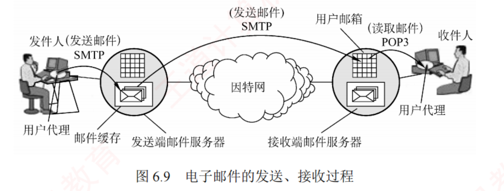
图 6.9 电子邮件的发送、接收过程 （原书 p.284）——比图 6.8 多出的信息是两个「落点」 ：发送端邮件服务器里画着邮件缓存 （待发队列），接收端邮件服务器里画着用户邮箱 （已收信箱） 。这两个落点解释了邮件「异步」的原因——邮件是先落盘、再由 SMTP 客户定期扫描队列发出去的，收发双方从不需要同时在线。
收发过程六步 ：① 发件人用用户代理撰写邮件；② 用户代理用 SMTP 把邮件传给发送端邮件服务器；③ 发送端服务器把邮件暂存在邮件缓存队列 ；④ 发送端服务器的 SMTP 客户端 与接收端服务器的 SMTP 服务器 建立 TCP 连接，把队列中的邮件直接发送 过去；⑤ 接收端的 SMTP 服务器进程把邮件存入对应收件人的邮箱 ；⑥ 收件人用 POP3（或 IMAP） 从邮箱中下载 邮件。
我的补讲 · 「异步通信」这四个字，是电子邮件区别于其他四个应用的唯一性质
书上说 X ：电子邮件是一种异步通信方式，不要求通信双方同时在线 。潜台词是 Y ：「异步」的实现靠的是中间那两个存储点 ——发送端的邮件缓存队列 与接收端的用户邮箱 。
没有这两个落盘点，就不可能异步。 所以能考 Z ：对比本章其余四个应用，全部是同步 的 ——
DNS 要等回答、FTP 要两端都在、HTTP 要服务器在线、TELNET 更是实时交互。只有 E-mail 允许「你发的时候我不在」。 ⟹ 这也解释了综 01：正因为中间有存储，所以「TCP 保证了传输可靠」并不等于「邮件一定送达」 ——
存储环节（服务器故障、磁盘满、邮箱超限）不在 TCP 的保护范围内。
知识串联 · 邮件的「信封 + 内容」＝ 网络分层的「首部 + 数据」
首部与数据 一封邮件 = 信封 + 内容；内容 = 首部 + 主体 ——
这个嵌套结构与网络分层的封装一模一样 ：每一层都是「本层首部 + 上层交下来的整体」 。 对照表：信封 ≈ IP 首部（负责投递，路由器只看它）· 邮件首部 ≈ 应用层首部（To/Subject 相当于 HTTP 的首部行）· 主体 ≈ 实体主体 。 连「谁生成」都同构 ⚠️ 书上说「用户只需填写首部信息，邮件系统便会自动从中提取所需信息并生成信封 」 ——
这与「应用程序只管数据，各层协议栈自动加各自的首部」是同一件事。
用户填 To，系统据此生成信封；程序发数据，协议栈据此填目的 IP。
6.4.2 电子邮件格式与 MIME
一封电子邮件由信封和内容 两大部分组成，内容又分为首部和主体 。RFC 822 规定了邮件首部的格式，主体部分由用户自由撰写。 用户只需填写首部信息，邮件系统便会自动从中提取所需信息并生成信封 。
首部由若干首部行 构成，每行由「关键字: 值」 组成。最重要的关键字是 To 和 Subject ：To 是必填 ，用于指定收件人地址，格式为 收件人邮箱名@邮箱所在主机的域名 （如 abc@cskaoyan.com）；Subject 是可选 ；此外还有一个必填的 From ，但通常由邮件系统自动填充 。首部与主体之间以一个空行分隔。
From: fh@hit.edu.cn ┐
To: abc@cskaoyan.com ├ 首部（每行「关键字: 值」）
Subject: Say hello to Internet ┘
← 空行（首部与主体的分界）
blahblah… ┐
… ┘ 主体（用户自由撰写）
陷阱 · 哪几项是系统自动填的？（习题 07 的唯一错项）
习题 07 的 B 项 ：「邮件头中发信人地址（From:）、发送时间、收信人地址（To:）及邮件主题（Subject:）是由系统自动生成的 」——错。 正确的分界线：From 与发送时间 = 系统自动填；To 与 Subject = 用户自己填。
B 项把四项全归给了系统，所以错。 怎么记 ：「你是谁、什么时候寄的」机器知道；「寄给谁、写的什么事」只有你知道。
我的补讲 · 「邮箱名在本域内唯一 ⟹ 全网唯一」，这是一条被复用了很多次的构造法
书上说 X ：邮箱名 abc 在 cskaoyan.com 对应的邮件服务器上必须是唯一的 ，从而确保该地址在整个互联网范围内 唯一。潜台词是 Y ：全局唯一性是「局部唯一 + 层次前缀 」拼出来的，不需要任何全局登记处。 所以能考 Z ——这条构造法在 408 里出现了至少四次 ：
① 邮件地址 本地唯一@域名唯一；② 域名 标号在父域内唯一（6.2）；
③ MAC 地址 厂商编号(OUI) + 厂商内部编号（ch3）；④ IP 地址 网络号 + 主机号（ch4）。
四者是同一个设计模式：把「全球唯一」这件难事，切成「每一级自己保证本级唯一」这件易事。
多用途互联网邮件扩展（MIME）
考点追踪 ▶ SMTP 协议的特点（2018）
由于 SMTP 仅支持传输 7 位 ASCII 码文本邮件 ，无法直接传送非英语字符（中文、俄文，甚至带重音符号的法文德文），也无法传输可执行文件或其他二进制对象。为此提出了 MIME 。MIME 并未修改或取代 SMTP，而是在其基础上进行扩展 ：发送端先用 MIME 把非 ASCII 数据编码为 ASCII 格式，再交由 SMTP 传输 ；接收端再用 MIME 解码还原 。
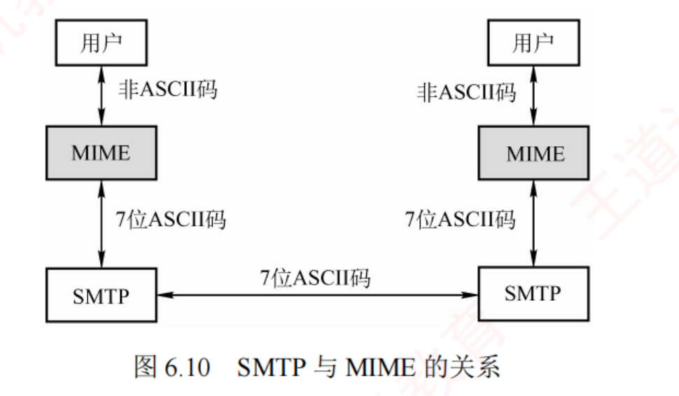
图 6.10 SMTP 与 MIME 的关系 （原书 p.285）——这张图用三个箭头标注说清了一件事：用户 ↕ MIME 之间跑的是「非 ASCII 码」，MIME ↕ SMTP 之间与两端 SMTP 横向之间跑的都是「7 位 ASCII 码」 。⟹ 一句话：MIME 是压在 SMTP 上面的一层转换层，链路上跑的永远是 7 位 ASCII。
MIME 包括三部分内容 ：① 定义了 5 个新的首部字段 （MIME 版本、内容描述、内容标识、传送编码、内容类型）；② 标准化了多种邮件内容的格式；③ 定义了传送编码机制 ，能对任意类型内容编码转换而不被邮件系统改变。
我的补讲 · MIME 三句话，2018 真题就落在第二句上
把 MIME 压成三句可默写的话 ：① 不改也不取代 SMTP （它只是「继续使用 RFC 822 格式，增加了主体结构并定义编码规则」）；② 把非 ASCII 编码成 7 位 ASCII 再交给 SMTP ；③ 新增 5 个首部字段。 2018 真题问「无须转换即可由 SMTP 直接传输的内容是」，四个选项 JPEG 图像 / MPEG 视频 / EXE 文件 / ASCII 文本，答案是 ASCII 文本 ——
因为前三个都得先过 MIME 编码这一关。 潜台词 ：SMTP 的「只能 7 位 ASCII」是一条历史包袱 ，不是设计优点 ——
它诞生得太早（那时带宽小、没人传图片），王道原文用的词是「较为老旧 的性质」。
所以出题人爱拿它当反差点：一个「可靠且高效」的协议，却连一张图片都传不了。
我的补讲 · 「RFC 822 只规定首部格式，主体由用户自由撰写」——这句话是 MIME 存在的前提
书上说 X ：RFC 822 规定了邮件首部的格式，而主体部分则由用户自由撰写。
综 02 又说：MIME 继续使用 RFC 822 格式 ，但增加了邮件主体的结构，并定义了传送非 ASCII 码的编码规则。 潜台词是 Y ：MIME 动的只有「主体」那一半，首部格式一个字没改 ——
它只是新增 了 5 个首部字段（版本、内容描述、内容标识、传送编码、内容类型），沿用的仍是「字段名: 值」这个老格式。 所以能考 Z ：「MIME 是否修改了 SMTP / RFC 822」这个问法，答案永远是没有 ——
它是扩展 不是替换 。综 02 的整段答案就围绕这一个词展开。
记法：MIME 是给 SMTP 加了个「翻译官」，没换掉 SMTP 本人。
背景 · 考试不碰
SMTP 会话里那一串具体的状态码与命令字（220 服务就绪 · HELO · MAIL FROM · RCPT TO · 250 OK · 550 No such user here · DATA · 354 · QUIT · 221 服务关闭 ），
408 从未考过让你默写完整会话脚本，也没考过某个状态码的具体数字 。需要记的只有三件事：① 三个阶段的名字（连接建立 / 邮件传送 / 连接释放）；② RCPT 的作用是预先验证收件人地址 ；
③ 邮件内容以 <CRLF>.<CRLF> 作结束标志 。
其余的命令字与三位数字，读过有印象即可，不必背。
6.4.3 SMTP（发送 · 端口 25）
考点追踪 ▶ SMTP 协议的功能与特点（2013–2015、2025）
SMTP 规范了两个相互通信的 SMTP 进程之间如何交换信息 。采用 C/S 模式：负责发送邮件的进程作为 SMTP 客户，负责接收邮件的进程作为 SMTP 服务器 。SMTP 基于 TCP 连接，使用熟知端口号 25。 通信过程分三个阶段：
【1 连接建立】SMTP 客户定期扫描邮件缓存队列，发现待发邮件即主动连接对方 25 端口
服务器 ──▶ 220 Service ready （服务就绪）
客户 ──▶ HELO <发送端主机名> （标识自身身份）
【2 邮件传送】
客户 ──▶ MAIL FROM: <fh@hit.edu.cn>
服务器 ──▶ 250 OK
客户 ──▶ RCPT TO: <abc@cskaoyan.com> （每个收件人一条，可发多条）
服务器 ──▶ 250 OK / 550 No such user here
客户 ──▶ DATA
服务器 ──▶ 354 Start mail input; end with <CRLF>.<CRLF>
客户 ──▶ …邮件内容… 最后以 <CRLF>.<CRLF> 结束
【3 连接释放】
客户 ──▶ QUIT
服务器 ──▶ 221 （服务关闭，同意释放 TCP 连接）
我的补讲 · RCPT 命令为什么要单独存在？——书上给了理由，这个理由本身就是考点
书上说 X ：RCPT 命令的作用是预先验证收件人地址的有效性 ，确保接收端已做好准备，
进而避免在发送长篇邮件后才发现地址错误，造成通信资源浪费 。潜台词是 Y ：这是一种「先问后发 」的握手式设计——把可能失败的检查提前到便宜的时候做。 所以能考 Z ：同样的思想在 408 里还有三处 ——
① TCP 三次握手（先确认对方在、再发数据，ch5）；② ARP 先问 MAC 再发帧（ch4）；③ FTP 的 RCPT 式对照物是「先建控制连接、登录成功才建数据连接」。
一句话：贵的动作之前，先做一次便宜的确认。
必记 · SMTP 不使用中间邮件服务器中转
TCP 连接始终在发送端与接收端的邮件服务器之间直接建立 ，不论二者相距多远、数据要经过多少路由器。
若接收端服务器故障暂时无法响应，则发送端服务器等待一段时间后重新尝试连接 。⚠️ 别把「IP 数据报要经过很多路由器转发」与「SMTP 要经过中间邮件服务器中转」搞混 ——
前者是网络层的事（ch4），后者是应用层的事：应用层看到的永远是一条端到端的 TCP 连接，中间的路由器它一个都看不见。
我的补讲 · 「SMTP 不使用中间邮件服务器中转」这句话，其实回答了一个更大的问题
书上说 X ：TCP 连接始终在发送端与接收端的邮件服务器之间直接建立 ，不论二者地理位置相距多远、数据经过多少路由器。潜台词是 Y ：应用层看到的是一条「端到端」的逻辑通道，中间那几十跳路由器对它完全不可见 。
这正是 ch1 分层模型的核心承诺：每一层只跟对端的同一层说话，下面怎么走它不关心。 所以能考 Z ：凡出现「邮件要经过多个邮件服务器逐跳转发」这类说法，一律错 ——
邮件只经过两台 邮件服务器（发送端的、接收端的），中间没有第三台。
⚠️ 别把「IP 数据报要经过多个路由器」（网络层的事实）与「邮件要经过多个邮件服务器」（应用层的谬误）混为一谈——
这是本节最典型的一处「层次串台」。
知识串联 · 「服务器故障就等一会儿再试」＝ 应用层自己做的重传
重试 书上说：若接收端邮件服务器因故障暂时无法响应，则发送端服务器等待一段时间后重新尝试连接 。
这与 DNS 的「定时器超时就再问一遍」是同一种做法——应用层自己实现的重试机制 。 但两者的时间尺度差了好几个数量级：DNS 重试是秒级 （用户在等页面）；SMTP 重试可以是小时级甚至几天 （没人等着这封邮件立刻到）。 怎么用 ⟹ 这印证了一条：「重传」这个机制在不同层、不同应用里的参数 可以差很远，但骨架 都是「发出去 → 起定时器 → 超时再发」 。
ch5 的 TCP 超时重传（RTO 由 RTT 估算，毫秒级）只是这个骨架里参数调得最精细的一个版本。
6.4.4 POP3（读取 · 端口 110）与 IMAP
考点追踪 ▶ POP3 协议的功能与特点（2015、2018、2025）
邮局协议 POP3 是一种结构简单但功能有限 的邮件读取协议，采用 C/S 模式，基于 TCP，使用端口号 110 。POP3 支持两种工作模式 ：① 下载并保留 ——读取后邮件仍留在服务器上；② 下载并删除 ——邮件一旦被成功读取即从服务器删除。
IMAP 的功能更强大 ：支持用户在服务器端创建文件夹、在文件夹之间移动邮件、对远程邮箱搜索 等在线操作，为此 IMAP 服务器需要维护用户的会话状态信息 。IMAP 还支持选择性获取邮件内容 （只下载首部，或只取多部分 MIME 邮件中的某一部分），这一特性在低带宽环境下 尤为实用。
此外，随着万维网普及，出现了大量基于 Web 的电子邮件 服务（Hotmail、Gmail 等）。其特点是：用户浏览器与邮件服务器之间的交互（包括发送和读取邮件）均通过 HTTP 完成，而仅在不同邮件服务器之间传递邮件时才使用 SMTP。
陷阱 · 「用浏览器发邮件」是本节最大的坑（习题 04、习题 06 连考两次）
习题 04 ：用 Firefox 在 Gmail 中向邮件服务器发送邮件时，使用的是哪个协议？答案 HTTP，不是 SMTP。 习题 06 ：不能用于用户从邮件服务器接收电子邮件的协议是？答案 SMTP ——常用的邮件读取 协议有 POP3、HTTP 和 IMAP 三个。 ⟹ 一条判据：题干里只要出现「浏览器 / Web 邮箱 / Gmail / 163 网页版」，用户与服务器之间那一段就是 HTTP ，
SMTP 只在服务器与服务器之间 那一段还活着。 记法：Web 邮箱把「用户代理」换成了浏览器，浏览器只会说 HTTP。
必记 · 「能发不能收 vs 能收不能发」——一条对称口诀吃掉习题 05
用户代理只能发不能收 ⟹ POP3 地址配错了 （收信靠 POP3）；只能收不能发 ⟹ SMTP 地址配错了 （发信靠 SMTP）。 这就是你在 Outlook / Foxmail 里要分别填 smtp.xxx.com 与 pop3.xxx.com 两个地址的原因。
我的补讲 · 2013 与 2025 是一对镜像真题，必须并排背（本节最高性价比的一条）
两道题一个问 SMTP 能干什么、一个问 POP3 能干什么，合起来正好把「三段两协议」考了两遍：
说法 2013 真题（问 SMTP） 2025 真题（问 POP3） 只支持 7 比特 ASCII 码内容 ✔（Ⅰ 对） — 支持在邮件服务器之间 发送邮件 ✔（Ⅱ 对） ✘（Ⅲ 错，那是 SMTP 的活） 支持从用户代理向邮件服务器 发送邮件 ✔（Ⅲ 对） ✘（Ⅱ 错，那也是 SMTP 的活） 支持从邮件服务器向用户代理 发送邮件 ✘（Ⅳ 错，那是读取，归 POP3） — 支持用户代理从邮件服务器读取 邮件 — ✔（Ⅰ 对） 支持通过一条 TCP 连接收取多封 邮件 — ✔（Ⅳ 对） 答案 A（仅 Ⅰ Ⅱ Ⅲ） A（仅 Ⅰ Ⅳ）
⟹ 两道题合起来只在考一句话：「SMTP 管前两段推，POP3 只管最后一段拉。」
把这句话背成条件反射，2013 的 Ⅳ、2025 的 Ⅱ Ⅲ 三个错项一眼看穿。
⚠️
2025 唯一需要额外记的是 Ⅳ：POP3 支持在一条 TCP 连接中收取多封邮件 ，不必一封一条连接 ——
这与 6.5 的「HTTP 持续连接」是同一个思想：建连接很贵，能复用就复用。 知识串联 · 「IMAP 要维护会话状态」＝ FTP 有状态 ＝ 状态的代价
有状态 vs 无状态 本章一共出现了三个「有状态」的协议和一个「无状态」的 ：
协议 状态 要记住什么 FTP （6.3）有状态 用户账户、当前所在目录 IMAP （本节）有状态 会话状态（文件夹结构、已读标记等） POP3（本节） 基本无状态 只有「下载并保留 / 下载并删除」两种模式 HTTP （6.5）无状态 什么都不记，要认人只能靠 Cookie
代价与好处 有状态 ⟹ 功能强（能做远程搜索、能记住你在哪个目录），但服务器要为每个用户留一份上下文，并发能力受限 ；能扛海量并发 。
⟹ 这正是《操作系统》里「进程上下文越大，能开的进程越少」的同一条权衡。 知识串联 · 「异步 · 先落盘再转发」＝ 存储转发，六章里第四次见
存储转发 邮件先存进「邮件缓存队列」，SMTP 客户再定期扫描发出去 ——
这是 存储转发（store-and-forward） 在应用层的一次现身 。前三次分别是：
ch1 的分组交换（路由器收完整个分组再转发）· ch3 的交换机（收完整个帧再查表转发）· ch4 的路由器排队转发。 共同代价 ⚠️ 存储转发一定带来「排队时延」，而且中间任何一跳的存储都可能丢 ——
这正是综 01 的答案：「电子邮件用了 TCP，为什么还会丢？」因为一封邮件要跨两条 TCP 连接 + 一次落盘存储 ，TCP 只保证每一条连接内不丢，保证不了端到端的应用级投递。
⟹ 可靠传输 ≠ 可靠投递。这句话在 ch5 也成立，在这里才第一次有了具体场景。
📄 p.287
我的补讲 · POP3 两种模式与 IMAP 的四项能力，出题人各挑过一次
协议 能力 要不要维护状态 被考过 POP3 下载并保留 （读完仍留在服务器）基本不用 2025 真题 Ⅳ（一条连接收多封）· 2015 真题（用 TCP） 下载并删除 （读完即从服务器删除）IMAP 在服务器端创建文件夹 必须维护会话状态 选择题里常作为「功能更强」的正确项出现 在不同文件夹之间移动邮件 对远程邮箱搜索 选择性获取 （只下首部、只取 MIME 的某一部分）
⟹ 「选择性获取」是 IMAP 独有、POP3 没有的能力 ，
书上特意说明它在低带宽环境 下尤其实用（不必下载整封带大附件的邮件就能浏览筛选）。
记法：POP3 = 「全下载」，IMAP = 「在线管理 + 按需下载」 ——功能越强，服务器负担越重，这又回到了那条「状态的代价」。 知识串联 · Web 邮箱那条「例外规则」，其实是 HTTP 吞并一切的开始
HTTP 通吃 书上说 Web 邮箱里「浏览器与邮件服务器之间收发都用 HTTP ，只有服务器之间才用 SMTP」 ——
这意味着用户侧的 POP3/SMTP 被 HTTP 替代了 。 同样的替代在别处也发生了：网页版的文件传输（网盘）替代了 FTP · 网页版的远程桌面替代了 TELNET ——
HTTP 成了事实上的「通用应用层运输协议」。 考试怎么用 ⚠️ 408 只考这一条例外（Web 邮箱），但它的判据可以推广：只要用户侧的客户端是浏览器 ，那一段就是 HTTP 。
习题 04 与习题 06 连考两次，就是在确认你有没有抓住「浏览器」这个关键词。
6.4.5 两道要动手的题：2012 真题（读图）与综 03（读抓包）
2012 统考真题题图 （原书 p.287）——用户1 —①→ 用户1 的邮件服务器 —②→ 用户2 的邮件服务器 —③→ 用户2 。这就是图 6.8 去掉细节后的骨架版 。问 ①②③ 三段分别用什么协议 ⟹ SMTP、SMTP、POP3 （答案 D）。 「推推拉」三个字直接秒答，全章最快的一道真题。
综 03：一个 SMTP 报文段的十六进制转储（考场 2 分钟题）
题干 ：用户主机上的电子邮件用户代理与邮件服务器建立了连接，现截获一个 TCP 报文段（下图显示该报文段的前 126 个字节 的十六进制数及 ASCII 码内容），TCP 首部长度为 20B 。请回答：1) 用户代理和服务器之间使用的应用层协议是什么？2) 用户代理使用的端口号是多少？3) 该邮件的发件人邮箱是什么？
偏移 ┌──────── TCP 首部（20B）────────┐
0020 c0 e6 00 19 b0 ca d5 6f eb c9 10 e9 50 18 ...... .o....P.
0030 f9 98 51 bd 00 00 4d 65 73 73 61 67 65 2d 49 44 ..Q...Me ssage-ID
0040 3a 20 3c 34 44 43 45 39 32 42 41 2e 32 30 31 30 : <4DCE9 2BA.2010
0050 39 30 32 40 31 36 33 2e 63 6f 6d 3e 0d 0a 44 61 902@163. com>..Da
0060 74 65 3a 20 53 61 74 2c 20 31 34 20 4d 61 79 20 te: Sat, 14 May
0070 32 30 31 31 20 32 32 3a 33 33 3a 33 30 20 2b 30 2011 22: 33:30 +0
0080 38 30 30 0d 0a 46 72 6f 6d 3a 20 63 73 6b 61 6f 800..Fro m: cskao
0090 79 61 6e 32 30 31 32 40 31 36 33 2e 63 6f 6d 0d yan2012@ 163.com.
⚠️ 首行 0020 只印了 14 个字节（前两字节属于 IP 首部末尾，书上留白），
数偏移时必须从 0x22 起算，别把这一行当满 16 字节数。
💭 思路（动手前看）
第 1 问看似要「判断方向」，其实不用。 题目没说这个报文段是「代理→服务器」还是「服务器→代理」 ，
但只要在两个端口里认出哪一个是熟知端口 ，协议就定了 ——熟知端口一定属于服务器端。TCP 首部的前 4 个字节就是源端口和目的端口 ，各 2 字节。报文段从 0x22 开始（首行留白两字节），所以源端口在 0x22–0x23、目的端口在 0x24–0x25。 第 2 问是第 1 问的副产品 ：既然一个端口是服务器的熟知端口，另一个必然是用户代理的临时端口 。 第 3 问根本不用译码。 SMTP 的协议字段全是 ASCII，所以直接去右栏的 ASCII 列 里搜 From: 即可。 ✍️ 考场卷面
1) 由 TCP 首部格式，报文段的前两个 16 位字段分别为源端口和目的端口：
源端口 = 0xc0e6 = 49382，目的端口 = 0x0019 = 25 。⛳ 2 分 25 是 SMTP 的熟知端口，故该应用层协议为 SMTP 。 ⛳ 1 分
2) 因使用 SMTP，且服务器端口 25 出现在目的端口位置 ，
故源端口 49382 即为用户代理所使用的端口 。⛳ 2 分
3) SMTP 的字段均以 ASCII 码表示，由右侧 ASCII 内容可直接读出首部行
From: cskaoyan2012@163.com，故发件人邮箱为 cskaoyan2012@163.com 。⛳ 2 分
⟹ SMTP · 用户代理端口 49382 · 发件人 cskaoyan2012@163.com。 📌 批注
🐍 我做了一次独立复算（书上没给这些） ：把八行十六进制还原成字节流后逐字段解析——
0x22 = c0 e6 ⟹ 源端口 49382 ✅、0x24 = 00 19 ⟹ 目的端口 25 ✅、
数据偏移字段 0x2e 的高 4 位 = 5 ⟹ 首部 20B （与题干给的「TCP 首部长度为 20B」吻合）、
标志位 0x2f = 0x18 = PSH + ACK 、窗口 0xf998、检验和 0x51bd0x36 起，解码为 Message-ID: <4DCE92BA.2010902@163.com>\r\nDate: Sat, 14 May 2011 22:33:30 +0800\r\nFrom: cskaoyan2012@163.com\r\n。
✅ 与书答完全一致。 扣分点 首行 0020 只有 14 个字节。前两个字节属于 IP 首部的末尾（书上留了白），如果把这一行当满 16 字节去数，所有偏移全部错位 2 。
判据很简单：看左边的行首偏移标号 + 该行实际印了几个字节 ，别默认每行都是满的。 提速心算 ：这题的正确耗时是 2 分钟 ，不是 10 分钟。
认出 00 19 = 25 就锁定 SMTP，另一个端口必然是用户代理的；第 3 问在右栏搜 "From:" 即可。
千万不要逐字节译码整段 ASCII——那是在给自己制造 8 分钟的沉没成本。 跨章联系 ：这道题与 6.5 的 2011 综合真题（80 字节以太网帧）是同一种题型的两个难度 ——
本题只给了 TCP 层往上，2011 那道从以太网帧首字节开始给，多了 14B 以太网首部 + 20B IP 首部两层偏移。先把这道做熟，再去做那道。
📄 p.289
6.5 万维网（WWW）—— 按分值排全章绝对第一重心
6.5.1 万维网的概念与组成结构
考点追踪 ▶ HTTP 使用的传输层协议（2018）
万维网（WWW） 是一个分布式、联机式 的信息存储空间。空间中任何有用的事物都称为资源 ，并由一个统一资源定位符（URL）唯一标识 ；这些资源通过 HTTP 传送给用户。万维网的核心由三个标准构成 ：
统一资源定位符（URL） ——标识万维网上的各类文档，确保每个文档在整个万维网范围内拥有唯一的 URL 。超文本传输协议（HTTP） ——应用层协议，基于 TCP 连接提供可靠的数据传输 。超文本标记语言（HTML） ——描述文档结构的标记语言。
URL 的一般形式 ：<协议>://<主机>:<端口>/<路径>。其中 <协议> 常见的有 http、https、ftp；<主机> 是存放资源主机的域名或 IP 地址 ；<端口> 和 <路径> 在某些情况下可以省略URL 中的字符通常不区分大小写。
万维网采用客户/服务器模式 工作：用户主机上运行的浏览器 是万维网客户程序，存放文档的主机运行服务器程序，称为万维网服务器 。
我的补讲 · 「三个标准」各自解决一个问题，这个拆法比背名字有用
书上说 X ：万维网的核心由 URL、HTTP、HTML 三个标准构成。潜台词是 Y ：三个标准分别回答了三个问题——URL 答「东西在哪」· HTTP 答「怎么拿」· HTML 答「拿到之后怎么显示」 。 所以能考 Z ：习题 05「万维网上每个页面的唯一地址统称什么」＝ URL（不是 IP 地址、不是域名地址） ——
注意区分三个「地址」：IP 地址标识主机 （ch4）· 域名标识主机 的名字（6.2）· URL 标识主机上的某个资源 。
URL 比域名多了「路径」那一段，粒度细到具体某个文件。
知识串联 · URL 里那个可省略的「端口」，正是 ch5 端口概念的用户可见面
端口 http://host:8080/path 里的 8080 就是 ch5 讲的传输层端口号平时不写是因为浏览器默认替你填了 80 （https 填 443）。 怎么用 ⟹ 这解释了一件常被问的事：「为什么访问网页不用输端口，写程序却要指定端口」 ——
不是不用，是熟知端口有默认值。
⟹ 反过来，凡 URL 里显式写了端口号（如 :8080），说明该服务没有 用熟知端口。
我的补讲 · URL 里那两个「可以省略」的字段，各埋了一个考点
书上说 X ：<端口> 和 <路径> 在某些情况下可以省略（HTTP 默认端口 80，路径默认根目录）；URL 中的字符通常不区分大小写 。潜台词是 Y ：省略不等于没有——省略的意思是「用默认值」。
浏览器在真正发请求之前，会把 http://cskaoyan.com 补全成「连 cskaoyan.com 的 80 端口，请求路径 / 」。 所以能考 Z ：① 习题 03「为 HTTP 保留的端口号」答 TCP 的 80 （而 TCP 的 25 是 SMTP 的）；
② 「URL 不区分大小写」这一条要与「域名标号不区分大小写 」（6.2）并排记——两处说的是同一件事。 ⚠️ 但要注意书上用的词是「通常 不区分」——严格讲路径部分在某些服务器上是区分的，408 不考这个细节，按书答即可。
知识串联 · URL 的三段 ＝ 三层地址的一次「打包展示」
三种地址 <协议>://<主机>:<端口>/<路径> 这一行字，把三层的寻址信息全写在了一起：
URL 的字段 对应哪一层的寻址 出自 <主机> （域名或 IP）网络层 ：定位到哪台主机ch4（IP）+ 6.2（DNS 负责翻译） <端口> 传输层 ：定位到哪个进程ch5 <路径> 应用层 ：定位到该进程管理的哪个资源本章
⟹ 一个 URL 就是一次「由粗到细 」的三级定位：先找到机器，再找到进程，最后找到文件。
这正好复习了 ch4「IP 定位主机」与 ch5「端口定位进程」两句话。 6.5.2 HTTP 的操作过程
考点追踪 ▶ Web 浏览涉及的核心协议栈（2014、2021）
HTTP 定义了浏览器如何向万维网服务器请求文档，以及服务器如何把文档传送给浏览器 。从协议层次看，HTTP 是一种面向事务（transaction-oriented） 的应用层协议。每个万维网站点都运行一个服务器进程，持续监听 TCP 端口 80 。
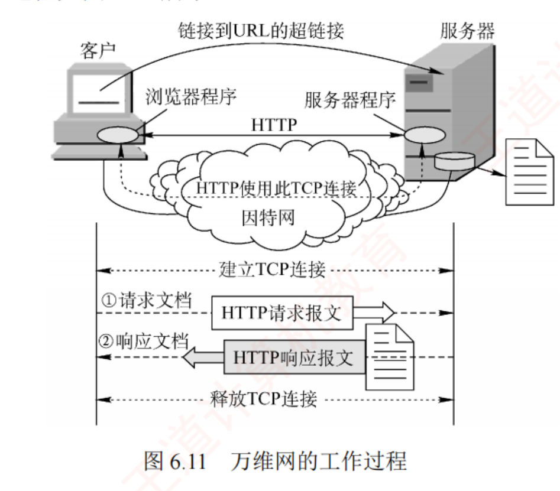
图 6.11 万维网的工作过程 （原书 p.290）——下半部分那条时序纵线是本图的价值所在 ：自上而下四段 建立 TCP 连接 → ①请求文档（HTTP 请求报文）→ ②响应文档（HTTP 响应报文）→ 释放 TCP 连接 。⚠️ 注意这是 HTTP/1.0 非持续连接 的画法：一次请求响应之后连接就释放了。6.5.4 的图 6.13 会给出持续连接的画法作对照。
用户单击鼠标后所发生的事件顺序 （以访问 http://www.tsinghua.edu.cn/index.htm 为例）：① 用户在地址栏输入 URL；② 浏览器向 DNS 服务器 请求解析域名；③ DNS 返回 IP 地址；④ 浏览器与服务器建立 TCP 连接 （默认端口 80）；⑤ 浏览器发出 HTTP 请求 GET /index.htm；⑥ 服务器通过 HTTP 响应把文件发给浏览器；⑦ 释放 TCP 连接 ；⑧ 浏览器解析文件并把 Web 页面显示给用户 。
必记 · 「一次网页访问会点亮哪些协议」——这句话是 2014 与 2021 两道真题的题眼
书上原话 ：实际上整个通信可能涉及 TCP/IP 体系结构中的多种协议——
应用层的 DHCP、DNS 和 HTTP，传输层的 UDP 与 TCP，网际层的 IP 和 ARP，以及数据链路层的 CSMA/CD 或 PPP 。
⟹ 按发生顺序 排成一条线，考场上照着默写：
DHCP（拿 IP、掩码、网关、DNS 地址） ← 应用层，跑在 UDP 上
↓
ARP（问网关或本网段主机的 MAC） ← 网际层
↓
DNS（域名 → IP） ← 应用层，跑在 UDP 上
↓
TCP 三次握手 ← 传输层
↓
HTTP GET / 响应 ← 应用层，跑在 TCP 上
↓
IP 转发 + 以太网帧（CSMA/CD）或 PPP 接入 ← 网际层 / 数据链路层
⚠️ 这条线上唯一「不会出现」的常见协议是 SMTP ——2014 真题问的就是「不可能使用到的协议」，答案 SMTP。 我的补讲 · 2014 真题的四个选项，是一道「排除法」题，逐个说清为什么
题 ：使用浏览器访问某大学的 Web 网站主页时，
不可能使用到 的协议是？A. PPP B. ARP C. UDP
D. SMTP
选项 什么时候会用到 结论 A. PPP 拨号 / ADSL / 光纤接入 ISP 那一段链路（ch3） 可能用到 B. ARP 不知道网关或目的主机 MAC 时，用 IP 查 MAC（ch4） 可能用到 C. UDP DNS 查询走 UDP （若 DNS 缓存未命中）可能用到 D. SMTP 只有「用邮件客户端发信」或「邮件服务器之间转发」时才用 不可能用到 ✔
⟹ 出题人埋的坑在 C：很多人会想「HTTP 用 TCP，怎么会用 UDP」——忘了 DNS 那一步 。
这道题真正在考的是：「访问一个网页」不只是 HTTP 一个协议的事，而是一整条协议链。 我的补讲 · 「面向事务（transaction-oriented）」这个词，解释了 HTTP 为什么长成这样
书上说 X ：HTTP 是一种面向事务 的应用层协议。潜台词是 Y ：「事务」＝ 一次请求 + 一次响应 ，这就是 HTTP 的最小完整单位，也是它的全部。
每个事务自我完备、互不依赖——这正是「无状态」的另一种说法 。 所以能考 Z ：「面向事务」「无状态」「无连接」三个词其实在描述同一件事的三个侧面 ：
无连接 说的是「不用先打招呼」· 无状态 说的是「不记得你」· 面向事务 说的是「一问一答就是全部」。对照 FTP：FTP 是面向会话 的——你先登录、再 cd、再 get，后一条命令依赖前一条建立的上下文 。
这就是「有状态 vs 无状态」在用户视角下的差别。
背景 · 考试不碰
书上 6.5.1 提到「万维网是由无数网络站点和网页组成的集合，构成了互联网最主要的应用部分（互联网还包括电子邮件、Usenet 和新闻组 等）」——
其中 Usenet 与新闻组 是上世纪的应用，408 从未考过，也不在考纲里 。这一句唯一的价值是支撑 6.6 第 2 条那个「万维网 ⊊ 互联网 」的判断 ——
知道「互联网上不止有网页」这一点就够了，两个名词本身不用记。
6.5.3 HTTP 的特点：无连接 · 无状态 · Cookie
考点追踪 ▶ Cookie 的工作原理（2015）
HTTP 使用 TCP 作为传输层协议，保证了可靠传输。但需特别注意：HTTP 本身是无连接 的 ——尽管底层使用了 TCP 连接，但在交换 HTTP 报文之前，并不需要建立专门的「HTTP 连接」 。此外，HTTP 是无状态 的 ：同一客户第二次访问某页面时，服务器的响应与第一次完全相同，它并不记录此前与该客户的交互历史 。
陷阱 · 「HTTP 无连接」不等于「HTTP 不用 TCP」（本节最高频的一句话）
三句话必须同时成立，缺一不可 ：① HTTP 基于 TCP（可靠）· ② HTTP 本身无连接 · ③ HTTP 无状态。 「无连接」指的是HTTP 这一层不建连接 ——它不需要先握手确认「我们开始说 HTTP 了」，直接就把请求报文丢进已有的 TCP 连接。 常见干扰项 ：「HTTP 是无连接的，所以它基于 UDP」——错。两句话不矛盾，TCP 的连接是传输层的，HTTP 的无连接是应用层的。 对照记忆 ：习题 01「客户与服务器之间采用面向无连接 协议通信的是」，答案是 DNS 不是 HTTP ——
那题问的是传输层 用不用连接，HTTP 传输层用的是 TCP，所以不选它。两处「无连接」问的层次不同，读题要看清主语。
Cookie 的工作原理
HTTP 的无状态特性简化了服务器设计，使其更易于支持大量并发请求 。实际应用中通常结合 Cookie 与数据库 来实现用户行为跟踪。工作原理：
用户首次 访问某启用 Cookie 的网站时，服务器为其生成唯一的 Cookie 识别码 （如 "12345"），并以此为索引在后端数据库 中创建一条记录。
服务器在 HTTP 响应报文 中加一个 Set-cookie 首部行：Set-cookie: 12345。
浏览器把 Cookie 识别码连同服务器域名保存在本地的 Cookie 文件 中。
用户再次 访问时，浏览器在 HTTP 请求报文 中自动附加 Cookie 首部行：Cookie: 12345。
服务器凭识别码从数据库检索出该用户的活动记录，提供个性化服务。
必记 · Cookie 的两个方向 + 两个存放位置，四件事全是考点
方向：Set-cookie 在响应 报文里（服务器→浏览器，发放）· Cookie 在请求 报文里（浏览器→服务器，出示） 。 位置：Cookie 文件 存在客户端 （是用户主机上的一个文本文件）· 用户的活动记录 存在服务器端数据库 。 ⟹ 习题 09 的错项 A「Cookie 仅存储在服务器端」，错就错在这条上。
而 C 项「Cookie 会威胁客户的隐私」是对的 ——因为服务器数据库里那份记录（个人信息、购物偏好）有可能被卖给第三方 。
我的补讲 · 「Cookie 只存一个识别码」这句话，回答了「无状态怎么变成有状态」
书上说 X ：服务器为用户生成唯一的 Cookie 识别码，并以此为索引在后端数据库中创建记录 。潜台词是 Y ：状态没有消失，只是被搬走了 ——从「协议里」搬到了「数据库里」。
HTTP 协议本身仍然无状态（每个请求独立），但应用层面靠一个小小的识别码把前后请求串了起来 。 所以能考 Z（习题 08） ：「HTTP 是无状态协议，然而 Web 站点经常希望能够识别用户，这时需要用到什么」＝ Cookie
（不是 Web 缓存、不是条件 GET、不是持续连接）。⟹ 这是一个漂亮的工程范式：协议保持简单（无状态），把复杂性推到应用层去解决 。
同一范式在 ch4 也见过：IP 保持简单（不可靠、无连接），把可靠性推给 TCP。
知识串联 · 「无状态 ⟹ 好扩展」是整个互联网架构的底层选择
状态的代价 书上那句「无状态特性简化了服务器设计，使其更易于支持大量并发请求 」不是一句客套话 ——
它解释了为什么 HTTP 能撑起整个万维网，而 FTP 撑不起来 ：FTP 有状态 ⟹ 每个用户占一份上下文 ⟹ 并发上限被内存卡死；HTTP 无状态 ⟹ 服务器处理完一个请求就可以彻底忘掉它 ⟹ 想加多少台服务器就加多少台。 跨科对照 《操作系统》里的对应物是「进程上下文越大，能同时开的进程越少」 ；
《组成原理》里的对应物是「流水线每级的锁存器越多，代价越高」 ——
三科在说同一件事：要并发，就得让每个「单位」尽量轻。
📄 p.291
我的补讲 · 「Cookie 威胁隐私」是习题 09 的正确项，理由要能说出来
习题 09 的 C 项「Cookie 会威胁客户的隐私」是对的 ，很多人会觉得这是「主观判断」而不敢选。 书上给的理由很具体：服务器的后端数据库 记录了用户在 Web 站点上的活动，这些信息（个人信息、购物偏好等）有可能被出卖给第三方 。 潜台词 ：威胁隐私的不是客户端那个只存了「12345」的小文件 ，而是服务器上那份被这个号码索引起来的完整行为档案 。
Cookie 本身只是钥匙，值钱的是钥匙打开的那个柜子。 ⟹ 这条理解顺带解决了 A 项：Cookie 文件在客户端 （钥匙在你手里），活动记录在服务器 （柜子在人家那儿）——
A 说「仅存储在服务器端」，把钥匙和柜子混成一个了，所以错。
6.5.4 ⭐⭐ 持续连接与非持续连接：全章最贵的一张 RTT 账本
HTTP/1.0 仅支持非持续连接，HTTP/1.1 支持持续连接（默认启用）。 在非持续连接 模式下，每个网页元素（JPEG 图像、Flash 动画等）的传输都需要单独建立一个 TCP 连接 ；客户端通常在 TCP 第三次握手的 ACK 报文中捎带 HTTP 请求。所谓持续连接 ，是指服务器在发送响应后仍保持该 TCP 连接 ，使同一客户可继续通过该连接发送后续请求。
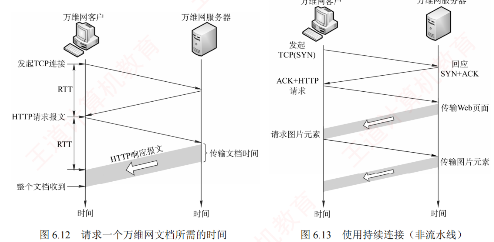
图 6.12 请求一个万维网文档所需的时间（左）· 图 6.13 使用持续连接，非流水线（右） （原书 p.292）——RTT 账本的两张底图，一张都不能少，必须并排看 。左图 ：发起 TCP 连接 →（第 1 个 RTT）→ HTTP 请求报文 →（第 2 个 RTT）→ HTTP 响应报文（灰色宽带 = 传输文档时间）⟹ 取一个对象 = 2RTT + 传输时间 ；右图 ：TCP(SYN) → SYN+ACK → ACK 捎带 HTTP 请求 → 传输 Web 页面 → 请求图片元素 → 传输图片元素 ⟹ 连接只建一次，之后每个对象各占 1 个 RTT 。两图相减，就是「持续连接省下了什么」：省的是每个对象各自那 1 个握手 RTT。
HTTP/1.1 的持续连接又分非流水线和流水线两种 ：非流水线 方式中，客户端必须等待前一个响应到达后才能发送下一个请求 ，服务器发完一个对象后连接处于空闲；流水线 方式中，客户可连续发送多个对象的请求，服务器也能连续发送响应 ，若所有请求与响应均能连续传输，则获取全部引用对象仅需 1RTT 。
必记 · 五种模式的 RTT 账本（设主页 1 个 + 引用对象 n 个，忽略传输时延，从「建立 TCP 连接」起算）
模式 建连 取主页 取 n 个对象 合计 n=7 时 出处 HTTP/1.0 非持续 · 串行 每个对象各 1RTT 1RTT n×1RTT 2(n+1) 16 2024 真题 HTTP/1.0 非持续 · 无限并行 2 批各 1RTT 1RTT 1RTT（并发） 4 4 习题 11 HTTP/1.0 非持续 · m 条并行 n 个对象分 ⌈n/m⌉ 批 2 + 2⌈n/m⌉ — 推广式 HTTP/1.1 持续 · 非流水线 只 1RTT 1RTT n×1RTT n + 2 9 2011 综合真题 HTTP/1.1 持续 · 流水线 只 1RTT 1RTT 1RTT（全部） 3 3 习题 12、13
⚠️⚠️ 三条使用说明，比公式本身还重要：
① 起点在哪，答案就差 1RTT ：
「从建立 TCP 连接开始」比「从发出 HTTP 请求开始」多 1RTT。
上表全部按「从建立 TCP 连接开始」算；若题干说「从发出 HTTP 请求开始」，则每一行都减 1 （流水线变 2、非流水线变 n+1）。
② 对象数要 +1 ：题干说「引用了 n 幅图像」，则总对象数是
n + 1 （还有那个 HTML 主文档）。
③ 一旦题目给了 MSS 和文件大小，上面五个公式全部作废 ——
必须改画逐轮 cwnd 演化时序（2022 真题、6.6 疑难点 3）。 我的补讲 · 习题 11 与 2024 真题是同题干、只改一个前提的镜像题——四个数字全在选项里
两题题干逐字相同 ：「浏览 1 个 Web 页，该页引用同一网站上的
7 个小图像文件 ，非持久 HTTP/1.0，从
为传输 Web 页请求建立 TCP 连接开始 ，到接收完所有内容为止，所需 RTT 数
至少 是」——
只有一个词不同 ：
题 前提 算法 答案 习题 11 支持 并行 TCP 连接1（建连）+1（取页）+1（并行建 7 条连接）+1（并行取 7 图） 4RTT 2024 真题（19） 不支持 并行 TCP 连接每个对象都要 2RTT，共 8 个对象 16RTT
⭐⭐ 最阴的一点：n=7 时，四种模式的答案恰好是 16 / 4 / 9 / 3——而这四个数字正好被 A B C D 四个选项瓜分。
出题人就是拿另外三种模式的答案当干扰项。
⟹ 所以看到这类题，第一步不是算，是先圈出三个关键词：「持久/非持久」「并行/不并行」「流水线/非流水线」 ，圈错一个就必然落进另一个选项里。 我的补讲 · 习题 12 与 13：同为流水线，答案却是 2RTT 与 7RTT——差别全在「起点」和「要不要 DNS」
习题 12 习题 13 模式 HTTP/1.1 流水线 HTTP/1.1 流水线 引用对象数 3 幅 JPEG 7 个小图像 起点 「从发出 HTTP 请求报文开始」⟹ 连接已建好 「从点击超链接开始」⟹ 还要先做 DNS DNS 不计 最多 4RTT （本地服务器递归、其他迭代）算式 1（取 html）+ 1（流水线取 3 图） 4（DNS）+ 1（建连）+ 1（取页）+ 1（流水线取 7 图） 答案 2RTT（选 A） 7RTT（选 C）
⟹ 两题放在一起，才把「起点」这件事讲透 ：
习题 12 说「从发出 HTTP 请求开始」，握手那 1RTT 被排除在计时之外 ；习题 13 说「从点击超链接开始」，
连 DNS 解析 都得算进去。
⚠️
习题 13 的 DNS 那 4RTT 要用 6.2 的规则算 ：
主机→本地服务器递归 1 次（若命中就到此为止），
否则本地服务器再迭代问根 / com / cskaoyan.com 三次 ⟹ 最多 1+3 = 4RTT。
题目问「最多 」，所以取全部落空的 4。
对照 6.2 的 2020 真题：那题也是 3 次迭代，但它把「主机→本地服务器」的时延明确说了忽略 ，所以只有 3RTT。两题差的那 1RTT，全在题干的一句话上。 我的补讲 · 那五个 RTT 公式不必死记，现场推导只要 20 秒
把「取一个对象要几个 RTT」拆成两笔账，五个公式全部能当场推出来 ：
要花的 RTT 非持续 持续 建连接 每个对象各 1 个 整场只 1 个 请求 + 响应 每个对象各 1 个 非流水线：每个对象各 1 个所有引用对象合起来 1 个
于是（对象总数 = n 个引用 + 1 个主页 = n+1）：
· 非持续串行 = (n+1) 个建连 + (n+1) 个请求响应 = 2(n+1) ；
· 非持续并行 = 主页那一轮 2 个 + n 个对象并发的一轮 2 个 = 4 ；
· 持续非流水线 = 1 个建连 + (n+1) 个请求响应 = n+2 ；
· 持续流水线 = 1 个建连 + 1 个取主页 + 1 个取全部对象 = 3 。
⟹ 只要记住「建连账 + 请求响应账 」这两栏，四个公式当场就能写出来，不必背四个式子。
并行的那个 m 条限制版 也一样：n 个对象分 ⌈n/m⌉ 批，每批 2 个 RTT（建连 + 请求响应），再加主页那 2 个 ⟹ 2 + 2⌈n/m⌉ 。 知识串联 · 「流水线」这个词在 408 三科里指的是同一件事
流水线 HTTP 的流水线（本节）· TCP 的滑动窗口连续发送（ch5）· 数据链路层的后退 N 帧 / 选择重传 （ch3）· 组成原理的指令流水线 ——
四者的共同定义是：不等前一个完成就开始下一个 。 连「省下了什么」都一致：非流水线的时间 = n × 单个的时间；流水线的时间 ≈ 单个的时间 + (n−1) × 一个「拍」 ——
HTTP 流水线把 n 个 1RTT 压成了 1 个 1RTT，正是组原里「n 条指令从 n×k 拍压到 k+(n−1) 拍」的同一个动作。 连限制也一致 ⚠️ 组原的流水线受数据相关 限制，HTTP 的流水线受「必须先拿到 HTML 才知道要请求哪些图」 限制 ——
这就是习题 12 那句「假设只有在收到 rfc.html 后才能发送对其引用图像的请求」的由来：取主页那 1 个 RTT 无论如何省不掉。
⭐ 2022 统考真题：给了 MSS，五个公式全部作废
题干 ：主机 H 通过 HTTP/1.1 请求浏览 Web 服务器 S 上的 news408.html，该页引用了同目录下的 1 幅图像 ；html 文件大小为 1MSS，图像文件大小为 3MSS ，RTT = 10ms ，忽略 HTTP 响应报文的首部开销和 TCP 段传输时延。若 H 已完成域名解析 ，则从 H 请求与 S 建立 TCP 连接时刻起 ，到接收到全部内容止，所需时间至少是（ ）。B. 40ms C. 50ms D. 60ms
💭 思路（动手前看）
先识别「公式失效」的信号。 题干给了 MSS 和文件的具体大小 ——这两个词一出现，
RTT 账本里那五个公式立刻作废 ，因为服务器一轮能发多少，不再由 HTTP 决定，而由 拥塞窗口 决定 。套用 HTTP/1.1 持续连接的账本，答案会是 n+2 = 3RTT = 30ms（选项 A）——这正是出题人准备好的坑。
1 幅图像、持续连接，按公式算就是 3RTT。但真实答案是 4RTT。 多出来的那 1RTT 从哪来？ 来自 ch5 的慢开始：TCP 连接刚建立时 cwnd = 1MSS ，
服务器一轮只能发 1 个 MSS 。 图像有 3MSS，一轮发不完。 所以要逐轮画 ：每收到一轮的确认，cwnd 翻倍（慢开始）。1 → 2 → 4，看几轮能把 1MSS 的 html + 3MSS 的图发完。 别忘了第三次握手可以捎带 HTTP 请求 （题目要「至少」，就取最理想的情形）。 ✍️ 考场卷面（选择题，这里给的是草稿纸上的时序图）
主机 H 服务器 S
|——— 发起 TCP(SYN) ─────────────────────▶| ┐
|◀────────────────── 响应 SYN+ACK ────────| ┘ 第 1 个 RTT（前两次握手）
|——— ACK + HTTP 请求 ───────────────────▶| ┐ 第 2 个 RTT
|◀── cwnd=1MSS，发送 html（1MSS）─────────| ┘
|——— ACK + 对图像的 HTTP 请求 ──────────▶| ┐ 第 3 个 RTT
|◀── cwnd=2MSS，发送图像的前 2MSS ────────| ┘
|——— ACK（对已收部分图像的确认）────────▶| ┐ 第 4 个 RTT
|◀── cwnd=4MSS，发送图像剩余 1MSS ────────| ┘ ← 传输完成
合计 4 RTT = 4 × 10ms = 40ms
⟹ 至少需要 40ms ，选 B 。 📌 批注
扣分点 1 看到 MSS 就必须画时序，不许套公式。选 A（30ms）的人不是不会 HTTP，而是忘了 TCP 的慢开始 ——
王道在 6.6 疑难点第 3 条 专门写了一整段解释这道题，标题就叫「HTTP/1.1 使用持续连接，为何下载一个网页及其图片仍可能需更多 RTT」。 扣分点 2 cwnd 是 1 → 2 → 4 的翻倍，不是 +1。初始阈值题目没给（默认足够大），所以整段都在慢开始 阶段，指数增长。
若题目给了 ssthresh（如 2023 那道给了 4MSS），就要在封顶后改成线性 +1。 与 2023 真题的对照（很重要） ：两题都是「逐轮 cwnd + RTT 计数」，但问的东西不同 ——
2022 问「几个 RTT」（数轮次），2023 问「某一瞬间 cwnd 是多少」（数 ACK）。
前者用轮次表 ，后者要用微观规则（每收一个 ACK +1） ，别混。 提速心算 ：把「1MSS html + 3MSS 图」翻译成「服务器要发 4 个 MSS」，
再看慢开始每轮能发 1、2、4 ⟹ 累计 1、3、7 ，第 3 轮就够了 ⟹ 数据占 3 个 RTT，加上握手那 1 个 ⟹ 4RTT。
这个「累计够了没」的算法与 2023 第 4 问完全一样，练一次通两题。
我的补讲 · 2022 与 2024 是两道「看起来像、解法完全相反」的真题，放一起看才不会串
2022 真题 2024 真题 HTTP 版本 1.1（持续） 1.0（非持续、不并行） 题干给了什么 MSS + 文件大小 （1MSS / 3MSS）只给对象个数 （7 个小图像）该用什么 逐轮画 cwnd （账本作废）直接套 2(n+1) 为什么可以不管 cwnd — 「小图像文件」⟹ 每个都 < 1MSS，一轮就发完 答案 4RTT = 40ms 16RTT
⭐ 关键在最后一行：2024 题干里「小 图像文件」那个「小」字，就是在告诉你「别考虑拥塞窗口」 ——
每个对象都装得下一个 MSS，所以一个 RTT 就传完。
⟹ 三条判据，按顺序问自己：① 给了 MSS 和文件大小吗？给了 ⟹ 画时序；
② 没给，但说了「小文件」吗？说了 ⟹ 放心套公式；③ 都没说 ⟹ 默认忽略传输时延，套公式。 习题 14：HTTP + 拥塞窗口 + 四次挥手 + 2MSL（本节最长的一条链）
题干 ：主机 H 通过持久的 HTTP/1.1 请求服务器 S 上的 5KB 数据，MSS = 1KB ，RTT = 50ms ，MSL = 800ms ，双方接收窗口都足够大；H 收到来自 S 的第一个携带数据的报文段后，立即向 S 发送连接释放报文段 （注：连接释放报文段可携带数据或确认信息）。从 H 请求与 S 建立 TCP 连接时刻起，到 H 进入 CLOSED 状态 为止，所需时间至少是（ ）。D. 1800ms
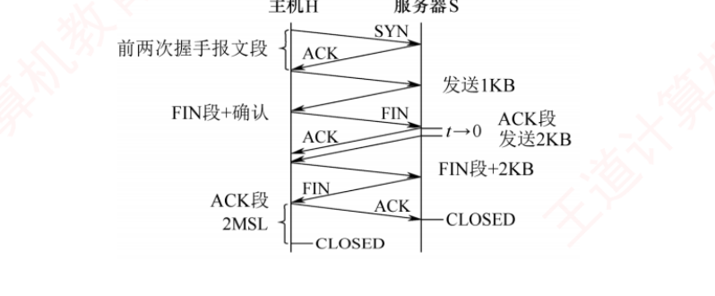
习题 14 的时序图 （原书答案配图）——这张图把四个 RTT 的分工画得很清楚 ：① 前两次握手；② 第三次握手捎带请求，S 以 cwnd=1KB 发 1KB；③ H 发 FIN+确认，S 的 cwnd 翻倍到 2KB 并发送 2KB；④ S 发 携带最后 2KB 数据的 FIN 段 ，H 回 ACK 后进入 TIME-WAIT，等 2MSL 才进 CLOSED。 ⟹ 4RTT + 2MSL = 4×50 + 2×800 = 200 + 1600 = 1800ms 。
📌 这道题的三个易错点（它是 ch5 与 ch6 缝合最紧的一道选择题）
① 问的是「H 进入 CLOSED」，所以必须加 2MSL。 主动关闭方（这里是 H）在发出最后一个 ACK 后要进入 TIME-WAIT，等 2MSL 才真正 CLOSED；被动关闭方（S）收到 ACK 就直接 CLOSED。
若题目问的是「S 进入 CLOSED」，答案就是 200ms，不加那 1600ms。 ② cwnd 从 1KB → 2KB 是慢开始翻倍 ，不是 +1。 接收窗口足够大 ⟹ 发送窗口 = 拥塞窗口，整段都在慢开始。 ③ FIN 段可以携带数据（题干专门给了注）。 所以最后那 2KB 是搭着 FIN 段一起发的 ，不额外占一个 RTT。
如果误以为「FIN 必须单独发」，就会多算 1RTT 得到 1850ms（选项里没有，这时应该回头检查而不是硬凑）。 跨章清单 ：这一道题同时用到了 ch5 的三次握手 · 慢开始 · 四次挥手 · TIME-WAIT 的 2MSL 四个考点，
外加本章的持续连接 + 第三次握手捎带请求 。做不动这题，说明 ch5 的连接管理那一节要回炉。
📄 p.292
知识串联 · 习题 14 里的 2MSL，是 ch5「TIME-WAIT 为什么要等」的唯一一次落地
TIME-WAIT ch5 讲过主动关闭方要在 TIME-WAIT 停留 2MSL，理由有两条 ：
① 保证最后那个 ACK 能到达对方 （若丢了，对方会重发 FIN，自己还能再回一个 ACK）；
② 让本次连接的所有残余报文在网络中消亡 ，不干扰下一条使用相同四元组的连接。 习题 14 是本书里唯一一道把 2MSL 真正算进答案 的题 ——
MSL = 800ms ⟹ 2MSL = 1600ms，比前面那 4 个 RTT（200ms）大了整整 8 倍。
这个数量级对比本身就值得记：连接的「善后」时间可以远长于数据传输时间。 怎么用 ⟹ 看到题干给 MSL，就要立刻警觉「这题多半要问主动关闭方何时进 CLOSED」 ；
反过来，若题目问的是被动关闭方 ，MSL 这个条件就是多余的干扰信息 。
6.5.5 HTTP 的报文结构
考点追踪 ▶ HTTP 常用请求方法及功能（2015）
HTTP 是面向文本的（Text-Oriented） ，报文中的每个字段均为 ASCII 字符串 ，且字段长度不固定 。报文分两类：请求报文 （客户→服务器）与响应报文 （服务器→客户）。两类报文均由三部分组成，区别仅在于开始行的不同。
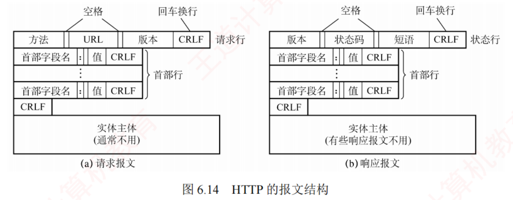
图 6.14 HTTP 的报文结构 （原书 p.293）——这张图要盯的只有第一行的字段顺序 ：(a) 请求报文的请求行 = 方法 ␣ URL ␣ 版本 ；(b) 响应报文的状态行 = 版本 ␣ 状态码 ␣ 短语 。 ⟹ 「版本」在请求行里排最后 ，在状态行里排最前 ——把这两个顺序对调，就是选择题最常用的干扰手法。 图上还标出了三个分隔符：字段间用空格 、每行末尾用 CRLF 、首部行与实体主体之间用一个只含 CRLF 的空行 。
组成 请求报文 响应报文 开始行 请求行 = 方法 ␣ URL ␣ 版本 CRLF 状态行 = 版本 ␣ 状态码 ␣ 短语 CRLF 首部行 若干行「字段名: 值 CRLF」，可多行也可为空；所有首部行之后还要用一个只含 CRLF 的空行 与实体主体分隔 实体主体 通常没有 有些响应报文也没有
表 6.1 HTTP 请求报文中常用的几个方法
方法 意义 考点 GET 请求读取由 URL 标识的信息 最常用 HEAD 请求读取由 URL 标识的信息的首部 习题 07：只要响应、不要请求对象 ⟹ HEAD POST 给服务器添加信息（如注释） — PUT 在指定 URL 处存储一个文档 — DELETE 删除由 URL 标识的资源 — CONNECT 用于代理服务器 与 6.5.6 呼应
一个典型的 HTTP 请求报文（2015 真题的原型）
GET /bbs/index.htm HTTP/1.1 ← 请求行：方法 GET、相对 URL 、HTTP 版本
Host: www.cskaoyan.com ← 指明服务器的域名（正因有它，上一行才能用相对 URL）
Connection: Keep-Alive ← 要求持续连接 ；若要非持续则写 Connection: close
User-Agent: Mozilla/5.0 ← 用户代理是浏览器 Mozilla/5.0
Accept-Language: cn ← 希望优先得到中文版本的文档
← 请求报文最后还有一个空行
HTTP 响应报文的第 1 行是状态行 ，包含三项：HTTP 版本、状态码、解释状态码的短语 。常见的三种：HTTP/1.1 202 Accepted（接受请求）、HTTP/1.1 400 Bad Request（错误的请求）、HTTP/1.1 404 Not Found（找不到页面）。
我的补讲 · 2015 真题是一道「逐行读报文」的白送题，四个选项各落在一行上
题给的报文 ：
GET /index.html HTTP/1.1 /
Host: www.test.edu.cn /
Connection: Close /
Cookie: 123456。
问「下列叙述中
错误 的是」：
选项 依据哪一行 判断 A. 该浏览器请求浏览 index.html 请求行的 URL ✔ 对 B. index.html 存放在 www.test.edu.cn 上 Host 首部行 ✔ 对 C. 该浏览器请求使用持续 连接 Connection: Close ✘ 错 ⟹ 选 C D. 该浏览器曾经浏览过 www.test.edu.cn Cookie 首部行 ✔ 对
⟹ 两条必背的对应关系 ：
① Connection: keep-alive = 持续连接 / Connection: close = 非持续连接；
② 请求报文里出现 Cookie: 首部 ⟹ 这个浏览器以前来过 （因为 Cookie 是服务器上次用 Set-cookie 发下来的）。
潜台词 ：
D 项的判断链是「请求里有 Cookie ⟸ 本地 Cookie 文件里有 ⟸ 服务器曾经 Set-cookie 过 ⟸ 曾经访问过 」 ——
这条链把 6.5.3 的 Cookie 原理和报文结构串成了一道题。 我的补讲 · 「HTTP 是面向文本的」这条性质，是所有抓包题能做的前提
书上说 X ：HTTP 是面向文本的（Text-Oriented） ，报文中的每个字段均为 ASCII 字符串 ，且字段长度不固定 。潜台词是 Y ：正因为是 ASCII，所以抓包时右栏的 ASCII 列里能直接看见 GET、Host:、From: ，
不需要任何解码。
而 IP 首部、TCP 首部是二进制且字段长度固定 的，只能按偏移量硬数。 所以能考 Z ：这条性质把抓包题劈成了两半——「首部部分数偏移，数据部分直接读 ASCII」 。
2011 综 03 的第 1 问（目的 IP）属于前一半，最后那句 GET /rfc.html HTTP/1.1 属于后一半；
6.4 综 03 的第 3 问（发件人邮箱）也属于后一半。先分清是哪一半，再决定怎么下手。 代价：文本协议比二进制协议啰嗦、解析慢 ——这是 HTTP/2 改用二进制分帧的原因（超纲，知道即可）。
知识串联 · 「字段长度不固定」⟹ 必须要有分隔符，这是所有文本协议的共性
定长 vs 变长 二进制首部（IP / TCP）靠固定偏移 找字段；文本协议靠分隔符 找字段。
HTTP 用了三种分隔符：字段间的空格 · 行尾的 CRLF · 首部与实体主体之间那个只含 CRLF 的空行 。 同样的问题在 ch3 也出现过：数据链路层的帧定界 ——字符计数法（定长思路）、
字符填充法（转义分隔符） 、零比特填充法、违规编码法，四种方法解决的正是「变长数据怎么知道哪里结束」。 SMTP 的对应物 ⚠️ SMTP 邮件内容以 <CRLF>.<CRLF> 结束 ——
这是同一个问题的又一个答案，而且它和 ch3 的「字符填充」面临同样的麻烦：如果邮件正文里本来就有一行只写一个点，怎么办？
（实际做法是发送方在这类行前多加一个点，接收方再去掉——这就是转义 。408 不考，但这条类比能让你彻底理解 ch3 的字符填充法。）
6.5.6 代理服务器（Web 缓存）
代理服务器（proxy server） 把近期的一些请求与响应 暂存在本地磁盘上，也称为万维网高速缓存（Web cache） 。新请求到达时，若代理服务器发现该请求与暂存的请求相同，便直接返回缓存的响应，而无须再次通过互联网访问原始服务器 。代理服务器可部署在客户端、服务器端或网络中间节点 上。在内网中设置代理服务器后，能把相当大一部分通信流量限制在内网内部 ，从而减少内网通往互联网的链路负载、降低访问互联网的延迟 。
知识串联 · Web 缓存是「空间换时间」在本章的第二个实例（第一个是 DNS 缓存）
空间换时间 Cache（组原）· TLB 快表（组原/OS）· 页表快表（OS）· ARP 缓存（ch4）· DNS 缓存（6.2）· Web 缓存（本节） ——
六个实例，一个套路。 本节新增的一层 ⚠️ Web 缓存比前几个多了一个「位置」维度：它可以放在客户端、服务器端或中间节点 ——
这与组原的 Cache 只能贴着 CPU 放不同。放在内网出口处的代理服务器，本质上是「给整个内网共用的一级缓存」。 怎么用 ⟹ 代理服务器带来的两个好处必须能同时说出来：① 减少链路负载（省带宽）· ② 降低访问延迟（省时间） 。
只说一个是不完整的。
📄 p.294
我的补讲 · 代理服务器的「部署位置」有三个，各自的效果完全不同
书上说 X ：代理服务器可部署在
客户端、服务器端或网络中间节点 上。
潜台词是 Y ：
三个位置服务的对象不同，省下的东西也不同：
位置 为谁服务 省下什么 客户端 （浏览器缓存）只服务这一个用户 省这台机器的重复请求 网络中间节点 （内网出口的代理）整个内网的所有用户共用 把大量流量限制在内网内部 ，省出口带宽 服务器端 （反向代理）服务所有访问该站点的人 省原始服务器的计算与磁盘压力
所以能考 Z ：
书上专门写的那句「在内网中设置代理服务器后，就能将相当大一部分的通信流量限制在内网内部 」，
说的是中间那一行 ——
它是三者中唯一能减少「内网通往互联网的链路负载」 的位置。
⟹ 两个好处必须成对说：减少链路负载（省钱）+ 降低访问延迟（省时间） 。 背景 · 考试不碰
图 6.15 那张 Wireshark 截图里的具体数值——帧号 8744、819 bytes on wire、Src Port tl1-raw(3082)、
Referer / User-Agent / Accept-Encoding / Accept-Charset 那一长串首部行的内容 ——408 不会考任何一个 。这张图真正要看的只有两样：① 中间协议树的层次顺序 （Frame → Ethernet → IP → TCP → HTTP）；
② 下方十六进制里反白的那几个字节 47 45 54 20 就是 GET 的 ASCII 码。
其余的字段值都是这一次抓包的偶然结果，记它们毫无意义。
6.5.7 HTTP 请求报文举例 + 表 6.2 端口表（全章最该背的一张表）
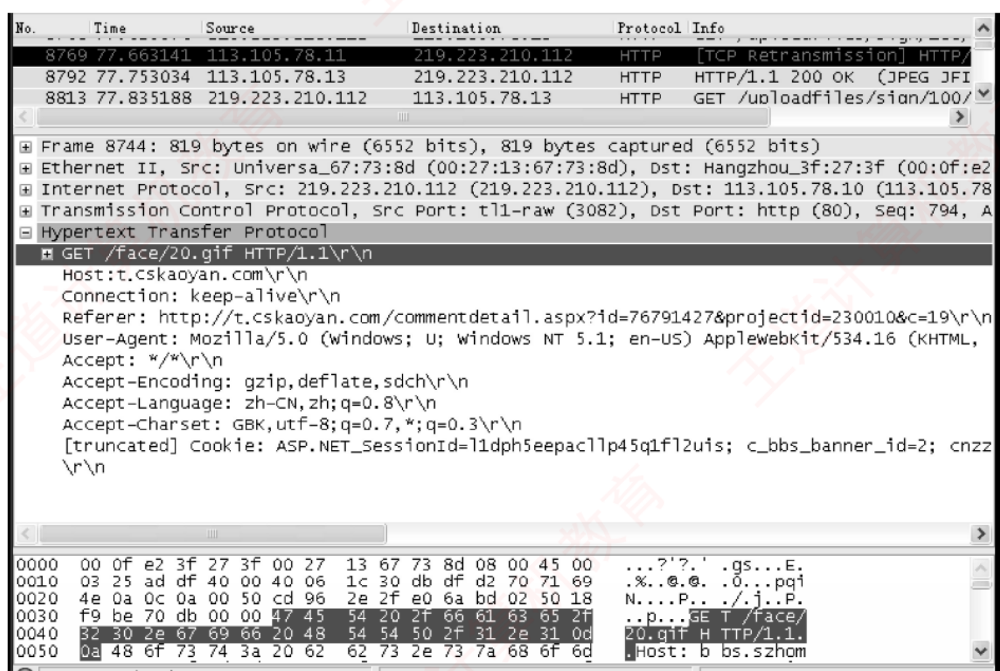
图 6.15 用 Wireshark 捕获的一个 HTTP 请求报文 （原书 p.294）——这是全书最好的一张「跨章串联」实物图 。中间的协议树自上而下把四层全列了出来：Frame（帧）→ Ethernet II（ch3，含源/目的 MAC）→ Internet Protocol（ch4，含源/目的 IP）→ Transmission Control Protocol（ch5，含 Src Port 3082、Dst Port http(80)）→ Hypertext Transfer Protocol（ch6，含 GET /face/20.gif HTTP/1.1 及各首部行） 。 最下面的十六进制转储里，被反白的那几个字节 47 45 54 20 2f 66 61 63 65 2f … 正是 GET /face/ 的 ASCII 码——「协议是一层套一层的字节」这句话，看这张图一次就懂。
按帧结构定义，图 6.15 的以太网数据帧中 ：第 1～6 字节为目的 MAC 地址 （默认网关地址）= 00-0f-e2-3f-27-3f；第 7～12 字节为源 MAC 地址 （本机）= 00-27-13-67-73-8d；第 13～14 字节为类型字段 = 08 00，表示上层协议为 IP ；第 15～34 字节（20B ）为 IP 数据报首部 ，其中第 27～30 字节为源 IP （db df d2 70 = 219.223.210.112），第 31～34 字节为目的 IP （71 69 4e 0a = 113.105.78.10）；第 35～54 字节（20B ）为 TCP 报文段首部 ；从第 55 字节开始为 TCP 数据部分 ，即 HTTP 请求报文。
必记 · 一条「偏移量账本」，所有抓包题共用
以太网首部 14B ┃ IP 首部 20B ┃ TCP 首部 20B ┃ 应用层数据
第 1–14 字节 ┃ 第 15–34 字节 ┃ 第 35–54 字节 ┃ 从第 55 字节起
细分：目的 MAC = 1–6 · 源 MAC = 7–12 · 类型 = 13–14（0800=IP，0806=ARP）
IP 首部内：源 IP = 第 13–16 字节 ⟹ 整帧第 27–30 ；
目的 IP = 第 17–20 字节 ⟹ 整帧第 31–34
TCP 首部内：源端口 = 第 1–2 字节 ⟹ 整帧第 35–36 ；
目的端口 = 第 3–4 字节 ⟹ 整帧第 37–38
⟹ 记住「14 + 20 + 20 = 54，数据从 55 起」这一条，2011 综合真题的第 1 问不用逐字节数就能定位。
（前提：IP 首部无选项、TCP 首部无选项，都是 20B——抓包题里几乎总是如此，但仍应看一眼首部长度字段确认。） 表 6.2 常见应用层协议小结（背这张表）
应用 FTP 数据 FTP 控制 TELNET SMTP DNS TFTP HTTP POP3 SNMP 传输层协议 TCP TCP TCP TCP UDP UDP TCP TCP UDP 熟知端口 20 21 23 25 53 69 80 110 161
必记 · 端口表的两条背法 + 两个补充
背法一：端口号 20 21 23 25 53 69 80 110 161 恰好严格递增 ——按这个顺序背，九个协议一个都不会漏。背法二：只有 DNS(53)、TFTP(69)、SNMP(161) 用 UDP，其余全是 TCP
——三个 UDP 的理由各不相同：DNS 幂等 · DHCP 式的 TFTP 要简单（引导时代码量小）· SNMP 要轻量（网管报文不能自己压垮网络） 。 两个必须补记（书上表里没有，但真题出现过） ：HTTPS = 443 、DHCP = 67（服务器）/ 68（客户端） 。⚠️ 再强调一遍 6.6 疑难点 1 的话：这张表里所有端口号一律是「服务器端」的；客户端端口由操作系统在连接发起时自动分配、仅本次通信有效。
服务器就是靠「自己的熟知端口 + 客户的临时端口」这一对端口号，为每个客户建立唯一的端到端连接。
我的补讲 · 习题 15 是一道「把 ch4 的 NAT 表搬到应用层端口语义上」的题
题干 ：NAT 路由器公网地址 205.56.79.35，NAT 表中有四条表项（转换端口 2056 ← 192.168.32.56:21 · 2057 ← 192.168.32.56:20 · 1892 ← 192.168.48.26:80 · 2256 ← 192.168.55.106:80）。
路由器收到一个源 IP 192.168.32.56、源端口 80 的分组，其动作是？答案 C：不转发，丢弃该分组。 解题链条（三步） ：源端口是 80 ⟹ 这是 HTTP 的服务器端 端口 ⟹ 192.168.32.56 上跑着一个 Web 服务器，这个分组是它发出的响应 。 响应必然对应着一个此前进来的请求 。若该请求来自外网，则 NAT 表里一定有 <192.168.32.56, 80> 这一条 （否则外网的请求根本进不来）。但表里 192.168.32.56 只登记了 21 和 20 两个端口，没有 80 ⟹ 说明这个请求来自内网主机 ⟹ 响应不需要经路由器转发 ⟹ 丢弃。 ⟹ 这道题的价值在于：它逼你把「熟知端口属于服务器端」这条应用层常识，用来反推一个分组的方向和来源 。
ch4 学 NAT 时只会查表，本章要求你判断「该不该有这条表项」。
📄 p.297
我的补讲 · 端口表还能横着读一遍：把九个协议按「用途」分成四组
竖着背端口号是为了不漏，横着按用途分组是为了理解：
组 协议（端口） 共同点 搬文件 FTP 数据 20 / FTP 控制 21 · TFTP 69 FTP 用 TCP（大文件要可靠）· TFTP 用 UDP（小、简单、给无盘引导用） 送消息 SMTP 25 · POP3 110 都用 TCP；一推一拉 查东西 DNS 53 · HTTP 80 DNS 查地址用 UDP（幂等）· HTTP 查网页用 TCP（要完整） 管机器 TELNET 23 · SNMP 161 TELNET 交互式登录用 TCP · SNMP 网管轮询用 UDP（要轻）
⟹ 有意思的是：四组里有三组都是「一个 TCP 配一个 UDP」的对照 ——
FTP↔TFTP · HTTP↔DNS · TELNET↔SNMP。
每一对的分野都是同一句话：要完整、要有序、不幂等 ⟹ TCP；要轻、要快、可重发 ⟹ UDP。 知识串联 · 表 6.2 与 ch5 的「端口三段区间」拼起来才完整
端口三段 ch5 把 16 位端口号分成三段 ：
0–1023 熟知端口 （由 IANA 指派，本表这九个全在这一段）· 1024–49151 登记端口 · 49152–65535 客户端口（临时端口） 。回看 6.4 综 03 那道抓包题：源端口 49382 落在 49152–65535 这一段 ⟹ 它必然是客户（用户代理）的临时端口；
目的端口 25 落在 0–1023 ⟹ 必然是服务器的熟知端口。
⟹ 不用查表也能判断方向：看两个端口号的大小段位就够了。 2011 真题的对照 ⚠️ 2011 那道的源端口是 1279 （在登记端口段），目的端口 80 ——
可见「客户端口一定 ≥ 49152」并不是硬性规定，不同操作系统的临时端口范围不同。
但「小端口是服务器、大端口是客户」这个相对关系在真题里从未失效。
6.5.8 ⭐⭐⭐ 两道综合真题：全章 30 分，也是全书的收口
我的补讲 · 先看这两道题的分工：一道静态解析、一道动态推演，性质完全互补
年份 题型 要做的动作 串起的考点 2011 （综 03）纯抓包解析 （静态）数字节偏移、查表、做减法 ，一个公式都不用以太网帧（ch3）· IP 首部 + NAT （ch4）· TCP 端口（ch5）· ARP 广播 （ch4）· HTTP 持续非流水线 RTT（ch6） 2021 （综 04）纯过程推演 （动态）按时间顺序把「都发生了什么」列出来 DNS （ch6）· ARP 两次 （ch4）· 交换机自学习 （ch3）· 广播帧的传播范围（ch3）
⟹ 两道题的练法完全不同 ：
2011 练的是「手不抖」 （数偏移别数错、十六进制别转错）；
2021 练的是「链不断」 （按时间线一步步推，中间漏一步后面全废）。 基石一 · 2011 统考真题（综 03）：80 个字节里藏着四层
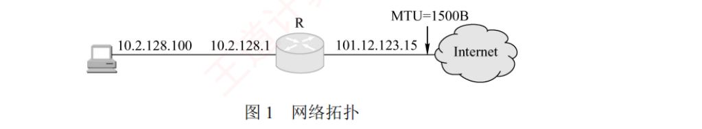
图 1 网络拓扑 ——主机（10.2.128.100 ，私有地址）—— 路由器 R（内侧 10.2.128.1 / 外侧 101.12.123.15 ）—— Internet（MTU = 1500B ）。图上三个 IP 地址，第 4 问全靠它们。
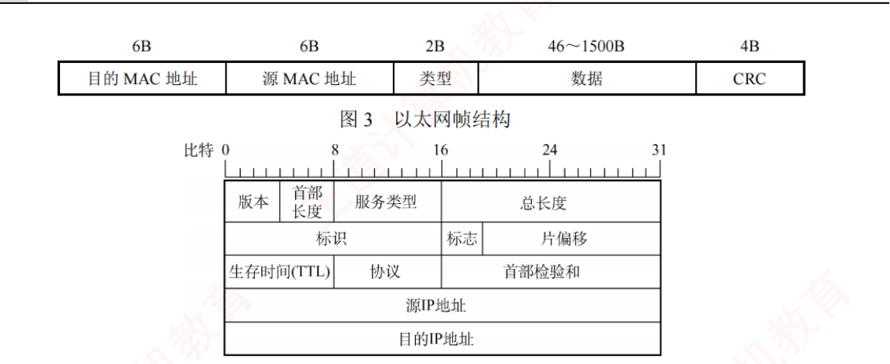
图 3 以太网帧结构 · 图 4 IP 分组头结构 ——题目把两张结构图直接给了你 ，所以第 1 问就是「照着图数字节」 。考场上先在这两张图上标出「目的 IP 前面有多少字节」，再去数据里数。
图 2 该主机进行 Web 请求的一个以太网数据帧前 80B （十六进制及 ASCII）：
0000 00 21 27 21 51 ee 00 15 c5 c1 5e 28 08 00 45 00 .!'!Q... ..^(..E.
0010 01 ef 11 3b 40 00 80 06 ba 9d 0a 02 80 64 40 aa ...;@... .....d@.
0020 62 20 04 ff 00 50 e0 e2 00 fa 7b f9 f8 05 50 18 b ...P.. ..{...P.
0030 fa f0 1a c4 00 00 47 45 54 20 2f 72 66 63 2e 68 ......GE T /rfc.h
0040 74 6d 6c 20 48 54 54 50 2f 31 2e 31 0d 0a 41 63 tml HTTP /1.1..Ac
├─ 1–6 目的MAC ─┤├─ 7–12 源MAC ─┤├13–14类型┤├── 15–34 IP首部 ──…
00 21 27 21 51 ee 00 15 c5 c1 5e 28 08 00 45 00 …
↑ IP ↑ 版本4/首部长5(=20B)
第 27–30 = 0a 02 80 64 ⟹ 源 IP 10.2.128.100
第 31–34 = 40 aa 62 20 ⟹ 目的 IP 64.170.98.32
第 35–36 = 04 ff ⟹ 源端口 1279 ；第 37–38 = 00 50 ⟹ 目的端口 80（HTTP）
第 55 字节起 = 47 45 54 20 2f 72 66 63 … ⟹ "GET /rfc.html HTTP/1.1\r\nAc"
💭 思路（动手前看）
第 1 问「Web 服务器的 IP」＝ 目的 IP。 不要从头逐字节数 ——
直接用偏移量账本：以太网首部 14B + IP 首部里目的 IP 前面还有 16B ⟹ 整帧第 31–34 字节 ，
去 0020 那一行读第 3～6 个字节即可（40 aa 62 20）。目的 MAC ——因为主机要发给外网 的 Web 服务器，链路层的下一跳只能是默认网关 。第 2 问的信号是「确定目的 MAC 地址」。 IP → MAC 是 ARP 的活（ch4）。
第二小问问「封装 ARP 请求的以太网帧的目的 MAC」——ARP 请求是广播 发出去的 ⟹ 目的 MAC 全 1。 第 3 问是本章的 RTT 账本题 ，两个关键词要圈死：「持续的非流水线 」＋「从发出 Web 请求 开始」 ——
后者意味着 TCP 连接已经建好，不算那 1RTT 建连 。 第 4 问的信号是「私有地址」＋拓扑图上的两个 IP。 私有地址要上 Internet ⟹ 必然经过 NAT ⟹ 源 IP 被换掉。
再叠加「每过一个路由器」的常规修改（TTL、检验和），最后考虑 MTU 是否引起分片。 ✍️ 考场卷面按 15 分估
1) 由图 3，以太网帧首部为 6+6+2 = 14B ；由图 4，IP 首部中目的 IP 地址字段之前有 4×4 = 16B 。
故目的 IP 位于帧的第 14+16+1 = 31 至 34 字节，读得 40 aa 62 20，
即 Web 服务器的 IP 地址为 64.170.98.32 。⛳ 3 分 前 6 字节 00-21-27-21-51-ee 为目的 MAC 地址 ，该帧发往外网，下一跳为默认网关，
故默认网关（10.2.128.1）端口的 MAC 地址为 00-21-27-21-51-ee 。⛳ 3 分
2) 该主机使用 ARP ⛳ 2 分 广播 形式发送 ARP 请求分组，
故封装该 ARP 请求报文的以太网帧的目的 MAC 地址为 FF-FF-FF-FF-FF-FF 。⛳ 2 分
3) HTTP/1.1 以持续的非流水线 方式工作时，客户收到前一个请求的响应后才能发出下一个请求；
又题目从发出 Web 请求 开始计时，此时 TCP 连接已建立。
第 1 个 RTT 用于请求并接收 rfc.html 页面；其后每访问一个引用对象各用 1 个 RTT，共 5 个 JPEG 图像。
故共需 1 + 5 = 6 RTT 。⛳ 3 分
4) 该 IP 分组的源地址 10.2.128.100 为私有地址，与 Internet 上主机通信须经 NAT 路由器 做网络地址转换，
把源 IP 地址 由 10.2.128.100 转换为 R 的全球地址 101.12.123.15 （即 0a 02 80 64 → 65 0c 7b 0f）。⛳ 2 分 生存时间 TTL 减 1，并重新计算首部检验和 ⛳ 2 分 总长度、标志、片偏移 字段也会发生变化。⛳ 1 分
⟹ 64.170.98.32 · 00-21-27-21-51-ee · ARP / FF-FF-FF-FF-FF-FF · 6RTT · 源 IP、TTL、首部检验和（必要时还有总长度/标志/片偏移）。 📌 批注
🐍 我把这 80 个字节做了一次完整的独立复算 （书上只解释了要考的那几个字段）：
目的 MAC 00-21-27-21-51-ee ✅ · 源 MAC 00-15-c5-c1-5e-28（与题干给的主机 MAC 完全吻合）✅ ·
类型 0x0800 （IP）✅ · IP 首部长 20B、总长度 495、TTL 128、协议号 6（TCP） ·
源 IP 10.2.128.100 （与题干吻合）✅ · 目的 IP 64.170.98.32 ✅ ·
TCP 源端口 1279、目的端口 80 ✅（进一步坐实「这是 Web 请求」）· TCP 首部 20B、标志 0x18 = PSH+ACK、窗口 64240 ·
载荷 = GET /rfc.html HTTP/1.1\r\nAc ✅。书答无误。 扣分点 1 第 4 问不能只写「改源 IP」。三样必须都写到：① 源 IP（NAT）· ② TTL 减 1 · ③ 首部检验和重算 ；
「若超过 MTU 还会改总长度/标志/片偏移」这一句写上是加分项——题干专门给了 MTU=1500B，就是在提示你想到分片 。
（本帧总长度 495B < 1500B，实际不会分片；但答题时把条件写全更稳。） 扣分点 2 第 3 问别多算建连的 1RTT。题干白纸黑字写着「从发出图 2 中的 Web 请求 开始」——连接早就建好了。
对照 RTT 账本：持续非流水线从「建连」起算是 n+2 = 7RTT，从「发请求」起算是 n+1 = 6RTT。差的就是这 1 个。 提速心算（这题最值钱的一条） ：目的 IP 永远 在整帧的第 31–34 字节 （以太网 14B + IP 首部前 16B），
直接去 0020 行读第 3～6 个字节，3 秒定位，不需要从头数 34 个字节 。
同理：源 IP 在第 27–30、源端口在 35–36、目的端口在 37–38、应用层数据从 55 起。这五个偏移背下来，所有抓包题都变成查表题。 十六进制换算复核 ：40=64, aa=170, 62=98, 20=32 ⟹ 64.170.98.32 ✅；
101=0x65, 12=0x0c, 123=0x7b, 15=0x0f ⟹ 65 0c 7b 0f ✅。（考场上这两处换算最容易手抖，写完回代验算一次只要 10 秒。）
基石二 · 2021 统考真题（综 04）：从 t₀ 到 t₁ 之间，网络里到底发生了什么
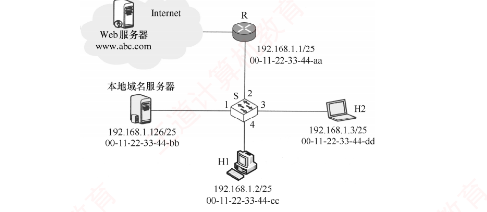
2021 统考真题拓扑 （原书 p.298）——以太网交换机 S 的四个端口 ：端口 1 接本地域名服务器 （192.168.1.126/25，MAC 00-11-22-33-44-bb）· 端口 2 接路由器 R （192.168.1.1/25，MAC 00-11-22-33-44-aa）· 端口 3 接 H2 （192.168.1.3/25，…-dd）· 端口 4 接 H1 （192.168.1.2/25，…-cc） ；R 经 Internet 连到 Web 服务器 www.abc.com。⭐ 看图必须先做一件事：确认本地域名服务器与 H1 在同一网段 （都是 192.168.1.0/25），而 Web 服务器在网段外 ——这决定了后面要 ARP 几次、问谁。
题干 ：在 t₀ 时刻 H1 的 ARP 表和 S 的交换表均为空 ，H1 在此刻利用浏览器通过域名 www.abc.com 请求访问 Web 服务器；在 t₁ 时刻（t₁ > t₀）S 第一次收到了封装 HTTP 请求报文的以太网帧 。假设 t₀ 到 t₁ 期间网络未发生任何与此次访问无关的通信。
💭 思路（动手前看 · 这道题的关键是「按时间线列事件」而不是「找公式」）
先问自己：H1 想发 HTTP 请求，还缺什么？ 缺两样——① www.abc.com 的 IP 地址（缺 ⟹ 要 DNS） ；
② 下一跳的 MAC 地址（缺 ⟹ 要 ARP） 。 第 1 问的答案就在第一样里。 再问：ARP 要问几次、问谁？ 这是全题最容易漏的一步。
① 先要跟本地域名服务器 说话（同网段 ⟹ 直接 ARP 问它的 MAC）；
② 拿到 Web 服务器 IP 后发现不在本网段 ⟹ 只能交给默认网关（路由器 R） ⟹ 再 ARP 问 R 的 MAC 。
⟹ 一共两次 ARP，且问的是两个不同的对象。 第 2 问考交换机自学习（ch3）。 铁律：交换机只根据帧的源 MAC + 收到该帧的端口 写表。
所以把上面那条时间线上「谁发过帧」逐个列出来，就得到表的内容。谁没发过帧，表里就没有它。 第 3 问考广播帧的传播范围。 ARP 请求 是广播（全网段都收到），ARP 响应 是单播（只有请求者收到）。
所以 H2 只会收到那两个 ARP 请求的广播帧。 「至少」两个字要留意 ：若交换表已经学到了某些条目，某些广播就不会发生；本题从空表 起算，所以恰好两次。 ✍️ 考场卷面按 15 分估
1) 从 t₀ 到 t₁ 期间，H1 除 HTTP 外还运行了 DNS ⛳ 2 分 CSMA/CD 帧 封装。
逐层封装关系为：DNS 报文 → UDP 数据报 → IP 数据报 → CSMA/CD 帧 。⛳ 3 分
2) t₀ 时刻两表均空。H1 先要解析域名，需向本地域名服务器发 DNS 查询，但 ARP 表为空，
故先
广播 ARP 请求 查询本地域名服务器的 MAC——S 收到该帧，记下
<00-11-22-33-44-cc, 4> ，再广播转发；
本地域名服务器回送 ARP 响应，S 收到后记下
<00-11-22-33-44-bb, 1> ，并从端口 4 转出。
得到 Web 服务器 IP 后，发现其
不在本局域网中 ，须经默认网关转发；H1 的 ARP 表中无路由器 MAC，
故
再次广播 ARP 请求 查询路由器 MAC；路由器回送 ARP 响应，S 收到后记下
<00-11-22-33-44-aa, 2> ，并从端口 4 转出。
整个过程未涉及 H2，H2 没有主动发送过任何帧，故 S 不会记录 H2 的 MAC 与端口。 ⛳ 4 分
t₁ 时刻 S 的交换表内容为：
MAC 地址 端口 来自哪一帧 00-11-22-33-44-cc （H1）4 H1 的第一个 ARP 请求 00-11-22-33-44-bb （本地域名服务器）1 域名服务器的 ARP 响应 00-11-22-33-44-aa （路由器 R）2 路由器的 ARP 响应
⛳ 2 分 3) 由 2) 的分析，H2 至少接收到 2 个 与此次 Web 访问相关的帧。⛳ 2 分 封装 ARP 查询（请求）报文的以太网帧 ；⛳ 1 分
这些帧的目的 MAC 地址均为 FF-FF-FF-FF-FF-FF 。⛳ 1 分
⟹ DNS；DNS 报文 → UDP → IP → CSMA/CD 帧；交换表三条（cc/4、bb/1、aa/2）；H2 收到 2 个 ARP 请求广播帧，目的 MAC 全 1。 📌 批注
扣分点 1 ARP 是两次 ，不是一次。第一次问本地域名服务器 （同网段，直接问）；第二次问路由器（默认网关） （Web 服务器不同网段，只能问网关）。
只答一次 ARP，第 2 问的表会少一条、第 3 问的答案会变成 1，两问一起错。 扣分点 2 交换表里没有 H2。交换机自学习只记录「源 MAC + 收到该帧的端口」——H2 从头到尾没发过任何帧，所以表里没有它 ；
但它会收到 广播帧（第 3 问的落点）。「收到」与「被记录」是两回事，这是本题设计得最精巧的一处。 扣分点 3 ARP 响应是单播 ，H2 收不到。所以 H2 收到的是 2 个 ARP 请求 ，不是 4 个（不含两个响应）。 ⚠️⚠️ 关于第 1 问的「CSMA/CD 帧」——本章唯一一处「官方答案本身有争议」的地方 ：
王道在书上专门加了一段「提示」自陈：在数据链路层把该报文封装解释为「以太网 V2 帧（或以太网帧）」会更合适，标准答案给出的「CSMA/CD 帧」相对而言并不算特别合适 ——
因为 CSMA/CD 更多用在以集线器互连的以太网中，而交换机可工作于全双工方式，通常不采用 CSMA/CD 。
⟹ 考场策略：照标答写「CSMA/CD 帧」 （这是官方给分点），但心里要清楚更准确的说法是「以太网 V2 帧」。
若题目问的是「该帧属于哪种帧格式」，则应答以太网 V2。 这道题的最大价值 ：它是 408 网络四科里最好的一道「全栈串联」题，一次点亮
DNS（ch6）+ ARP（ch4）+ 交换机自学习（ch3）+ IP 转发判断同网段与否（ch4）+ HTTP（ch6） 五个考点。
把这道题从头到尾自己默推一遍，等于把六章的主干复习了一次——这也是把它放在全书最后的原因。
我的补讲 · 两道综合真题合起来给出了一份「抓包题通用作答顺序」
把 2011（80B 帧）与 6.4 综 03（TCP 段）的解题动作抽象一遍，得到一份可以照抄的流程 ：
步 动作 依据 1 先确认起点 ：给的是整个以太网帧 还是只有 TCP 段 ？决定偏移量从哪算 2 读类型字段 （帧的第 13–14 字节）0800 = IP · 0806 = ARP 3 读 IP 首部第 1 字节 （如 45）高 4 位 = 版本 4，低 4 位 = 首部长 5 ⟹ 20B （确认无选项）4 读协议字段 （IP 首部第 10 字节）6 = TCP · 17 = UDP · 1 = ICMP 5 读两个端口 ，用熟知端口锁定应用层协议表 6.2 6 直接读 ASCII 栏 取应用层内容HTTP/SMTP 都是文本协议
⟹ 这六步走完，抓包题的每一问基本都已有答案，而且全程不需要背任何公式 。
练习建议：拿 2011 那 80 个字节，按这六步从头到尾自己走一遍 （不看答案），再对照我在批注里给的完整解析。 知识串联 · 2021 真题第 3 问的「至少」，考的是 ch3 交换机的两种转发行为
交换机转发 ch3 讲过交换机收到一个帧时的三种处理 ：
① 目的 MAC 在表中且端口不同 ⟹ 转发 到对应端口；② 目的 MAC 不在表中 ⟹ 广播 （向除入端口外的所有端口泛洪）；
③ 目的 MAC 在表中且端口相同 ⟹ 丢弃 （同侧，不必转发）。 2021 第 3 问问「H2 至少收到几个帧」，答案是 2 个 ARP 请求 ——
因为 ARP 请求的目的 MAC 是全 1（广播地址），无论表里有没有都必然泛洪 ；
而两个 ARP 响应 的目的 MAC 是 H1 的 cc，此时表里已经有 <cc, 4> 这一条，所以只从端口 4 单播转出，H2 收不到。 「至少」二字 ⚠️ 如果 t₀ 时刻 S 的交换表不是空的 （比如已经学到了 bb 和 aa），
某些广播就不会发生，H2 收到的帧还会更少 ——题目从空表起算，恰好是 2 次，所以说「至少」。
这个「至少」不是保险话，是题干对初始条件的精确交代。
6.5.9 另外两道非真题综合题：一道默写题、一道纯计算题
我的补讲 · 综 01 是「协议清单默写题」，答案就是 6.6 疑难点 4 的浓缩版
题 ：在浏览器中输入
http://cskaoyan.com 并回车，直到首页显示出来，按 TCP/IP 模型，从应用层到网络层用到了哪些协议？
标准答案（三层九个字） ：
层 协议 干什么 应用层 HTTP WWW 访问协议 DNS 域名解析服务 传输层 TCP 为 HTTP 提供可靠的数据传输 UDP DNS 使用 UDP 传输 网络层 IP IP 包传输和路由选择 ICMP 提供网络传输中的差错检测 ARP 把本机默认网关的 IP 地址映射成 MAC 地址
⚠️ 最容易漏的两个是 ICMP 与 ARP ——
前者平时看不见（差错报告），后者是「发出去之前必须先做」的那一步。
若题目问的范围扩到数据链路层，还要补 以太网（CSMA/CD）或 PPP ；若从「主机刚开机」算起，最前面还要补 DHCP 。 综 02：非持续 vs 持续，两种方式的时间账（3650ms vs 2150ms）
题干 ：RTT 平均值 150ms ，一个 gif 对象的平均发送时延 35ms ；一个 Web 页面有 10 幅 gif 图片 ，基本 HTML 文件、HTTP 请求报文、TCP 握手报文大小忽略不计 ；TCP 三次握手的第三步捎带 一个 HTTP 请求；使用非流水线 方式。分别计算非持续与持续方式请求该页面所需的时间。
✍️ 考场卷面
共同前提 每次三次握手的前两次消耗 1RTT = 150ms ；第三次握手捎带对 HTML 的请求，
故「请求并接收 HTML」再耗 1RTT = 150ms （HTML 大小忽略不计，发送时延为 0）。
非持续
thtml = 150（握手）+ 150（请求响应）= 300ms ；⛳ 2 分 重新建一次连接 ：tgif = 150（握手）+ 150（请求响应）+ 35（发送时延）= 335ms ；⛳ 2 分 t总 = 300 + 335 × 10 = 3650ms 。⛳ 1 分
持续
只需建立一次 TCP 连接：t总 = 150（建连）+ 150（取 HTML）+ (150 + 35) × 10 = 2150ms 。⛳ 3 分
⟹ 非持续 3650ms ，持续 2150ms ，持续方式节省 1500ms （正好是省下的 10 次握手 × 150ms）。 📌 批注
扣分点 两种方式下 tgif 的构成不同，这是全题唯一的坑。非持续的每个 gif = 握手 150 + 请求响应 150 + 发送 35 ；持续的每个 gif = 请求响应 150 + 发送 35 （没有握手那 150 ）。
把持续方式也写成 335×10，就会得到 3050ms，那是错的。 验算技巧 ：两个答案之差 3650 − 2150 = 1500 = 10 × 150 ——
恰好等于「省掉的 10 次握手」 。算完用这个差值回代验一次，10 秒钟就能确认没算错。 与 RTT 账本的关系 ：本题因为给了「发送时延 35ms」，所以不能直接套「2(n+1) / n+2」那两个纯 RTT 公式 ——
但骨架完全一致：非持续 = 2(n+1) 个 RTT + n 个发送时延；持续 = (n+2) 个 RTT + n 个发送时延。
代入 n=10、RTT=150、发送时延=35：非持续 22×150 + 10×35 = 3300+350 = 3650 ✅；持续 12×150 + 350 = 1800+350 = 2150 ✅。
两条路殊途同归，用哪条都行——但用公式那条只要 20 秒。
📄 p.303
6.6 本章小结及疑难点（四条全部是真题原型，一个字不删）
必记 · 这一页只有 1 页，但它是全章「答案的答案」
王道的 6.6 只有四条，而这四条每一条都对应着一道具体的真题 ：
第 1 条 ⟹ FTP 与端口表的三次考查 · 第 2 条 ⟹ 概念辨析题 · 第 3 条 ⟹ 2022 真题的官方解释 · 第 4 条 ⟹ 2021 综合真题的完整背景 + 2014 真题的出处 。
所以本节不能跳读，要整段读完。
1. 如何理解客户进程端口号与服务器进程端口号？
服务器进程使用熟知端口号 ，这些端口号是固定且公开的 ，便于客户找到对应的服务。客户进程则使用临时端口号 ，由操作系统在连接发起时自动分配，仅在本次通信中有效 。当客户向服务器发起连接时：会连接到服务器的熟知端口，并把自己的临时端口号告知服务器 。服务器随后通过这一对端口号（自身的熟知端口 + 客户的临时端口）建立唯一的端到端连接 。
知识串联 · 「一对端口号定一条连接」＝ ch5 的四元组套接字
套接字 ch5 说过：一条 TCP 连接由四元组 <源 IP, 源端口, 目的 IP, 目的端口> 唯一确定。
本节这句「服务器通过这一对端口号建立唯一的端到端连接」正是它的通俗版。 为什么服务器能同时服务很多客户 ⟹ 因为服务器这一侧的 IP 和端口都是固定的 （如 :80），
区分不同客户全靠客户那一侧的 IP + 临时端口 ——所以「一个 80 端口能同时服务上万个客户」并不矛盾 。
⟹ 这也解释了 FTP 为什么客户端要用两个随机端口（控制一个、数据一个）：两条连接的四元组必须不同。
2. 互联网和万维网的区别是什么？
互联网（Internet） 是一个全球性的计算机网络互联系统 ，起源于 ARPAnet，采用 TCP/IP 协议族作为通信基础，提供主机之间的连通性 。万维网（WWW） 是构建在互联网之上的一套应用层生态 ，由相互链接的网页和网站组成，通过 HTTP 协议和浏览器访问。简言之：互联网是「路」，万维网是「路上跑的一种车」 。
我的补讲 · 「路 vs 车」这个比喻要能自己举出另外几辆车
书上说 X ：互联网还包括电子邮件、Usenet 和新闻组等（6.5.1 原话）。潜台词是 Y ：万维网只是互联网上众多应用之一 ，虽然是最大的那一个。
跑在同一条「路」上的还有：电子邮件（SMTP/POP3）· 文件传输（FTP）· 远程登录（TELNET）· 域名解析（DNS）· 网络管理（SNMP） ——
恰好就是表 6.2 里那九列。 所以能考 Z ：凡出现「互联网就是万维网」「上网就是浏览网页」这类等同说法，一律错。
正确关系是真包含 ：万维网 ⊊ 互联网。
3. HTTP/1.1 使用持续连接，为何下载一个网页及其图片仍可能需更多 RTT？
因为 TCP 连接初始的拥塞窗口通常仅为 1MSS ，即使 HTTP/1.1 支持在同一连接上连续发送请求，服务器也不能一次性发送全部数据 。例如网页文件为 1MSS、图片为 3MSS：
第 1 个 RTT ：完成 TCP 建立连接的前两次握手。第 2 个 RTT ：第三次握手捎带 HTML 请求，服务器发送 1MSS（cwnd = 1）。第 3 个 RTT ：客户端确认网页并捎带图片请求，cwnd 增至 2MSS ，发送 2MSS 图片。第 4 个 RTT ：客户端确认已收图片数据，cwnd 增至 4MSS ，发送剩余 1MSS 图片。
因此，总耗时由数据大小和拥塞窗口增长节奏 共同决定，即使带宽充足，也至少需要 4RTT 。若忽略传输层拥塞控制，仅从应用层交互估算时间，则极易得出错误结论。
必记 · 这一整段就是 2022 真题的官方解答，等于书把答案又讲了一遍
⟹ 一句话总纲：HTTP/1.1 的持续连接省掉的是握手 ，省不掉 cwnd 的爬升 。 ⟹ 一条操作判据：题干只给「n 个对象 + RTT」⟹ 套 RTT 账本；题干还给了「MSS + 文件大小」⟹ 账本作废，画逐轮时序。
这条判据是本章最贵的一句话，它决定了 2022 与 2024 两道真题走向完全不同的解法。
4. 以太网主机刚开机后访问某 Web 站点，需经历哪些通信过程？
主机刚开机时尚未配置任何网络参数，通过有线方式接入本地局域网。在发送任何数据前，传统共享式以太网需遵循 CSMA/CD 机制 以避免冲突（注意，现代交换式以太网普遍采用全双工模式，不再使用 CSMA/CD ）。以访问 http://www.abc.com/index.html 为例：
DHCP 获取网络配置 。主机启动后，先通过 DHCP 自动获取 IP 地址、子网掩码、默认网关、DNS 服务器地址 等参数。DHCP 属于应用层协议，其报文封装在 UDP 数据报中，UDP 数据报再封装在 IP 数据报中，最终由数据链路层将该 IP 数据报封装为以太网 MAC 帧进行传输。 DNS 解析域名 。浏览器从 URL 中提取域名 www.abc.com，向本地 DNS 服务器发起解析请求。DNS 在传输层使用 UDP，查询报文被封装在 IP 数据报中。若 DNS 服务器与主机位于同一子网内，则主机先通过 ARP 把 DNS 服务器的 IP 解析为 MAC，再封装为单播帧发送给它；若 DNS 服务器位于其他子网，则主机先通过 ARP 获取默认网关 的 MAC，再把单播帧发给默认网关，由其转发。 最终 DNS 服务器返回域名对应的 IP 地址。HTTP 获取网页 。获得目标 IP 后，浏览器向该 Web 服务器的 80 端口 发起 TCP 连接请求。连接建立后立即发送 GET /index.html ；服务器返回 index.html 的 HTTP 响应。浏览器解析 HTML，若引用了图片、视频等资源，则对每个资源分别发起新的 HTTP 请求（根据 HTTP 版本不同，可能复用或新建连接 ）。所有资源传完后，TCP 通过四次挥手释放连接 。浏览器解析 HTML，完成网页展示。
知识串联 · ⭐⭐⭐ 这一段是整本《计算机网络》的收尾：六章在这里全部登场
全书收口 把这一段按发生顺序展开，六章内容一个不落：
顺序 发生什么 出自哪一章 0 网卡在共享式以太网上争用信道（CSMA/CD ） ch3 数据链路层1 DHCP 拿到 IP / 掩码 / 网关 / DNS 地址（封在 UDP 里）ch6 + ch5 2 ARP 问 DNS 服务器或默认网关的 MAC（广播请求、单播响应）ch4 网络层3 DNS 递归 + 迭代查询拿到 Web 服务器 IP（封在 UDP 里）ch6 + ch5 4 判断目的 IP 是否同网段 ，决定直接交付还是交给网关；沿途 IP 转发 、TTL 减 1 ch4 5 TCP 三次握手 、慢开始爬 cwnd、数据传输、四次挥手 ch5 传输层6 HTTP GET / 响应，浏览器解析 HTML 再取引用对象ch6 应用层— 整条链路上的信号编码、带宽与时延 ch2 物理层 · ch1 体系结构
⟹ 考场上凡遇到「访问一个网页会用到哪些协议 / 会发生什么」的题，照这张表的顺序默写即可 ，
按题目问的范围截取其中几行。
这就是 2021 综合真题 把这张表的第 2、3 行展开，就是 2021 综 04 的完整答案；
把第 1～6 行全列出来，就是综 01 的答案；问「哪个不 会用到」，就是 2014 真题（答案 SMTP，因为发邮件不在这条链上）。
⟹ 三道题，同一张表。 我的补讲 · 本章（也是四科）最后一条：为什么这一段值得单独背下来
408 网络的综合题有一个不成文的偏好：喜欢考「一次完整的通信过程」 ——
2011（一个 Web 请求的帧长什么样）· 2021（一次 Web 访问期间网络里发生了什么）· 2023（一次 FTP 上传的完整时间线） ，
三道综合真题都是同一个母题的变体：「把一次通信从头到尾讲清楚」 。 而 6.6 第 4 条，就是这个母题的标准答案模板。
⟹ 建议：把这一段抄一遍、默一遍，直到能在 3 分钟内不看书写出「开机 → 看到网页」的完整协议链 。
这是全书性价比最高的一次默写——它同时覆盖了六章的主干，也覆盖了本章 ≈43 分的综合题。
读完这一章之后
本章 37 页读完，408 四科（数据结构 · 组成原理 · 操作系统 · 计算机网络）的精读版就此全部完成。 接下来该做的三件事：
先把三道综合真题各默写一遍 ：2011 综 03（抓包解析） · 2021 综 04（全栈推演） · 2023 综 04（FTP + TCP 时间线） 。
它们合起来 ≈43 分，比本章所有选择题加起来还多。 再刷题 ：第 6 章练习（140 题 · 19 道真题 · 2009–2025 十七年零缺口） 。
建议顺序 6.5（40 题）→ 6.4（26 题）→ 6.2（30 题）→ 6.3（28 题）→ 6.1（16 题） 。最后收口 ：套路库 与 卡库 ——
时间紧就只过三样：① 端口表 20 21 23 25 53 69 80 110 161（只有 DNS/TFTP/SNMP 用 UDP）· ② HTTP 的五种 RTT 模式账本 · ③ 6.6 第 4 条那条完整协议链。
⚠️ 最后提醒一句本章最贵的两条判据，考场上先问自己这两句再动笔： ① 题干说「从哪里 开始、到哪里 为止」？——起点差一个词，RTT 就差 1。 ② 题干给没给 MSS ？——给了，RTT 账本立即作废，改画逐轮 cwnd。
← 返回 408 复盘中心 · 上一章：第 5 章 传输层 · 计算机网络 · 练习总入口
精读版 · 计算机网络 第 6 章 应用层 · 王道《计算机网络》p.267–303（37 页）· 配套 140 题 / 19 道统考真题